<!DOCTYPE html>
<html xmlns="http://www.w3.org/1999/xhtml" lang="en" xml:lang="en"><head>

<meta charset="utf-8">
<meta name="generator" content="quarto-1.2.475">

<meta name="viewport" content="width=device-width, initial-scale=1.0, user-scalable=yes">


<title>Movement Visualizations - Visualization of Movement Data</title>
<style>
code{white-space: pre-wrap;}
span.smallcaps{font-variant: small-caps;}
div.columns{display: flex; gap: min(4vw, 1.5em);}
div.column{flex: auto; overflow-x: auto;}
div.hanging-indent{margin-left: 1.5em; text-indent: -1.5em;}
ul.task-list{list-style: none;}
ul.task-list li input[type="checkbox"] {
  width: 0.8em;
  margin: 0 0.8em 0.2em -1.6em;
  vertical-align: middle;
}
pre > code.sourceCode { white-space: pre; position: relative; }
pre > code.sourceCode > span { display: inline-block; line-height: 1.25; }
pre > code.sourceCode > span:empty { height: 1.2em; }
.sourceCode { overflow: visible; }
code.sourceCode > span { color: inherit; text-decoration: inherit; }
div.sourceCode { margin: 1em 0; }
pre.sourceCode { margin: 0; }
@media screen {
div.sourceCode { overflow: auto; }
}
@media print {
pre > code.sourceCode { white-space: pre-wrap; }
pre > code.sourceCode > span { text-indent: -5em; padding-left: 5em; }
}
pre.numberSource code
  { counter-reset: source-line 0; }
pre.numberSource code > span
  { position: relative; left: -4em; counter-increment: source-line; }
pre.numberSource code > span > a:first-child::before
  { content: counter(source-line);
    position: relative; left: -1em; text-align: right; vertical-align: baseline;
    border: none; display: inline-block;
    -webkit-touch-callout: none; -webkit-user-select: none;
    -khtml-user-select: none; -moz-user-select: none;
    -ms-user-select: none; user-select: none;
    padding: 0 4px; width: 4em;
    color: #aaaaaa;
  }
pre.numberSource { margin-left: 3em; border-left: 1px solid #aaaaaa;  padding-left: 4px; }
div.sourceCode
  {   }
@media screen {
pre > code.sourceCode > span > a:first-child::before { text-decoration: underline; }
}
code span.al { color: #ff0000; font-weight: bold; } /* Alert */
code span.an { color: #60a0b0; font-weight: bold; font-style: italic; } /* Annotation */
code span.at { color: #7d9029; } /* Attribute */
code span.bn { color: #40a070; } /* BaseN */
code span.bu { color: #008000; } /* BuiltIn */
code span.cf { color: #007020; font-weight: bold; } /* ControlFlow */
code span.ch { color: #4070a0; } /* Char */
code span.cn { color: #880000; } /* Constant */
code span.co { color: #60a0b0; font-style: italic; } /* Comment */
code span.cv { color: #60a0b0; font-weight: bold; font-style: italic; } /* CommentVar */
code span.do { color: #ba2121; font-style: italic; } /* Documentation */
code span.dt { color: #902000; } /* DataType */
code span.dv { color: #40a070; } /* DecVal */
code span.er { color: #ff0000; font-weight: bold; } /* Error */
code span.ex { } /* Extension */
code span.fl { color: #40a070; } /* Float */
code span.fu { color: #06287e; } /* Function */
code span.im { color: #008000; font-weight: bold; } /* Import */
code span.in { color: #60a0b0; font-weight: bold; font-style: italic; } /* Information */
code span.kw { color: #007020; font-weight: bold; } /* Keyword */
code span.op { color: #666666; } /* Operator */
code span.ot { color: #007020; } /* Other */
code span.pp { color: #bc7a00; } /* Preprocessor */
code span.sc { color: #4070a0; } /* SpecialChar */
code span.ss { color: #bb6688; } /* SpecialString */
code span.st { color: #4070a0; } /* String */
code span.va { color: #19177c; } /* Variable */
code span.vs { color: #4070a0; } /* VerbatimString */
code span.wa { color: #60a0b0; font-weight: bold; font-style: italic; } /* Warning */
</style>


<script src="site_libs/quarto-nav/quarto-nav.js"></script>
<script src="site_libs/quarto-nav/headroom.min.js"></script>
<script src="site_libs/clipboard/clipboard.min.js"></script>
<script src="site_libs/quarto-search/autocomplete.umd.js"></script>
<script src="site_libs/quarto-search/fuse.min.js"></script>
<script src="site_libs/quarto-search/quarto-search.js"></script>
<meta name="quarto:offset" content="./">
<script src="site_libs/quarto-html/quarto.js"></script>
<script src="site_libs/quarto-html/popper.min.js"></script>
<script src="site_libs/quarto-html/tippy.umd.min.js"></script>
<script src="site_libs/quarto-html/anchor.min.js"></script>
<link href="site_libs/quarto-html/tippy.css" rel="stylesheet">
<link href="site_libs/quarto-html/quarto-syntax-highlighting.css" rel="stylesheet" id="quarto-text-highlighting-styles">
<script src="site_libs/bootstrap/bootstrap.min.js"></script>
<link href="site_libs/bootstrap/bootstrap-icons.css" rel="stylesheet">
<link href="site_libs/bootstrap/bootstrap.min.css" rel="stylesheet" id="quarto-bootstrap" data-mode="light">
<script id="quarto-search-options" type="application/json">{
  "location": "navbar",
  "copy-button": false,
  "collapse-after": 3,
  "panel-placement": "end",
  "type": "overlay",
  "limit": 20,
  "language": {
    "search-no-results-text": "No results",
    "search-matching-documents-text": "matching documents",
    "search-copy-link-title": "Copy link to search",
    "search-hide-matches-text": "Hide additional matches",
    "search-more-match-text": "more match in this document",
    "search-more-matches-text": "more matches in this document",
    "search-clear-button-title": "Clear",
    "search-detached-cancel-button-title": "Cancel",
    "search-submit-button-title": "Submit"
  }
}</script>


</head>

<body class="nav-fixed">

<div id="quarto-search-results"></div>
  <header id="quarto-header" class="headroom fixed-top">
    <nav class="navbar navbar-expand-lg navbar-dark ">
      <div class="navbar-container container-fluid">
      <div class="navbar-brand-container">
    <a class="navbar-brand" href="./index.html">
    <span class="navbar-title">Movement Visualizations</span>
    </a>
  </div>
          <button class="navbar-toggler" type="button" data-bs-toggle="collapse" data-bs-target="#navbarCollapse" aria-controls="navbarCollapse" aria-expanded="false" aria-label="Toggle navigation" onclick="if (window.quartoToggleHeadroom) { window.quartoToggleHeadroom(); }">
  <span class="navbar-toggler-icon"></span>
</button>
          <div class="collapse navbar-collapse" id="navbarCollapse">
            <ul class="navbar-nav navbar-nav-scroll me-auto">
  <li class="nav-item">
    <a class="nav-link active" href="./index.html" aria-current="page">
 <span class="menu-text">Home</span></a>
  </li>  
  <li class="nav-item">
    <a class="nav-link" href="./about.html">
 <span class="menu-text">About</span></a>
  </li>  
</ul>
              <div id="quarto-search" class="" title="Search"></div>
          </div> <!-- /navcollapse -->
      </div> <!-- /container-fluid -->
    </nav>
</header>
<!-- content -->
<div id="quarto-content" class="quarto-container page-columns page-rows-contents page-layout-article page-navbar">
<!-- sidebar -->
<!-- margin-sidebar -->
    <div id="quarto-margin-sidebar" class="sidebar margin-sidebar">
        <nav id="TOC" role="doc-toc" class="toc-active">
    <h2 id="toc-title">On this page</h2>
   
  <ul>
  <li><a href="#what-is-in-this-document" id="toc-what-is-in-this-document" class="nav-link active" data-scroll-target="#what-is-in-this-document">What is in this Document</a></li>
  <li><a href="#initial-set-up" id="toc-initial-set-up" class="nav-link" data-scroll-target="#initial-set-up">Initial Set Up</a>
  <ul class="collapse">
  <li><a href="#load-packages" id="toc-load-packages" class="nav-link" data-scroll-target="#load-packages">Load Packages</a></li>
  <li><a href="#set-working-directory-and-read-in-data" id="toc-set-working-directory-and-read-in-data" class="nav-link" data-scroll-target="#set-working-directory-and-read-in-data">Set Working Directory and Read in Data</a></li>
  <li><a href="#convert-to-posixct" id="toc-convert-to-posixct" class="nav-link" data-scroll-target="#convert-to-posixct">Convert to POSIXct</a></li>
  <li><a href="#filter-data-by-speed" id="toc-filter-data-by-speed" class="nav-link" data-scroll-target="#filter-data-by-speed">Filter Data by Speed</a></li>
  <li><a href="#categorizing-migration-patterns" id="toc-categorizing-migration-patterns" class="nav-link" data-scroll-target="#categorizing-migration-patterns">Categorizing Migration patterns</a></li>
  <li><a href="#convert-to-move" id="toc-convert-to-move" class="nav-link" data-scroll-target="#convert-to-move">Convert to move</a></li>
  </ul></li>
  <li><a href="#initial-visualizations" id="toc-initial-visualizations" class="nav-link" data-scroll-target="#initial-visualizations">Initial Visualizations</a>
  <ul class="collapse">
  <li><a href="#plot-coordinates" id="toc-plot-coordinates" class="nav-link" data-scroll-target="#plot-coordinates">Plot coordinates</a></li>
  <li><a href="#plot-with-base-maps" id="toc-plot-with-base-maps" class="nav-link" data-scroll-target="#plot-with-base-maps">Plot with Base Maps</a></li>
  </ul></li>
  <li><a href="#first-time-passage" id="toc-first-time-passage" class="nav-link" data-scroll-target="#first-time-passage">First Time Passage</a>
  <ul class="collapse">
  <li><a href="#ftp-with-increasing-radii" id="toc-ftp-with-increasing-radii" class="nav-link" data-scroll-target="#ftp-with-increasing-radii">FTP with increasing radii</a></li>
  <li><a href="#fpt-in-relation-to-time" id="toc-fpt-in-relation-to-time" class="nav-link" data-scroll-target="#fpt-in-relation-to-time">FPT in Relation to Time</a></li>
  </ul></li>
  <li><a href="#circular-visuals" id="toc-circular-visuals" class="nav-link" data-scroll-target="#circular-visuals">Circular Visuals</a>
  <ul class="collapse">
  <li><a href="#creating-azimuth" id="toc-creating-azimuth" class="nav-link" data-scroll-target="#creating-azimuth">Creating azimuth</a></li>
  <li><a href="#direction-of-travel" id="toc-direction-of-travel" class="nav-link" data-scroll-target="#direction-of-travel">Direction of Travel</a></li>
  <li><a href="#speed-in-relation-to-direction" id="toc-speed-in-relation-to-direction" class="nav-link" data-scroll-target="#speed-in-relation-to-direction">Speed in relation to Direction</a></li>
  <li><a href="#detailed-migration-map" id="toc-detailed-migration-map" class="nav-link" data-scroll-target="#detailed-migration-map">Detailed Migration Map</a></li>
  </ul></li>
  <li><a href="#working-with-altitude" id="toc-working-with-altitude" class="nav-link" data-scroll-target="#working-with-altitude">Working With Altitude</a>
  <ul class="collapse">
  <li><a href="#mutate-data-to-fit-elevatr" id="toc-mutate-data-to-fit-elevatr" class="nav-link" data-scroll-target="#mutate-data-to-fit-elevatr">Mutate Data to Fit Elevatr</a></li>
  <li><a href="#download-elevatr-data" id="toc-download-elevatr-data" class="nav-link" data-scroll-target="#download-elevatr-data">Download elevatr data</a></li>
  <li><a href="#calculate-elevation-above-ground-level" id="toc-calculate-elevation-above-ground-level" class="nav-link" data-scroll-target="#calculate-elevation-above-ground-level">Calculate Elevation above Ground Level</a></li>
  <li><a href="#apply-filters" id="toc-apply-filters" class="nav-link" data-scroll-target="#apply-filters">Apply Filters</a></li>
  <li><a href="#create-ggplot-visuals" id="toc-create-ggplot-visuals" class="nav-link" data-scroll-target="#create-ggplot-visuals">Create ggplot Visuals</a></li>
  </ul></li>
  </ul>
</nav>
    </div>
<!-- main -->
<main class="content" id="quarto-document-content">

<header id="title-block-header" class="quarto-title-block default">
<div class="quarto-title">
<h1 class="title">Visualization of Movement Data</h1>
</div>


<div class="quarto-title-meta">

    
  
    
  </div>
  

</header>

<section id="by-david-landis" class="level4">
<h4 class="anchored" data-anchor-id="by-david-landis">By David Landis</h4>
<p>This website is to provide users with example codes on how to visualize flight patterns. The codes provided were adapted from the Animove website. To learn more about Animove click <a href="https://animove.org">here</a> to visit their webpage. For any question about the codes provided please email the website creator David Landis at delandis@cpp.edu.</p>
</section>
<section id="what-is-in-this-document" class="level2">
<h2 class="anchored" data-anchor-id="what-is-in-this-document">What is in this Document</h2>
<ul>
<li>Initial Setup
<ul>
<li>Load Packages</li>
<li>Set Working Directory and Upload Documents</li>
<li>Convert to POSIXct</li>
<li>Filter Data</li>
<li>Categorizing Migration Patterns</li>
<li>Convert to move</li>
</ul></li>
<li>Initial Map Visualization
<ul>
<li>Plot coordinates</li>
<li>Plot with Base Maps</li>
</ul></li>
<li>First Time Passage (FPT)
<ul>
<li>FPT with increasing Radii</li>
<li>FPT in Relation to Time</li>
</ul></li>
<li>Circular Visuals
<ul>
<li>Creating Azimuth</li>
<li>Direction of Travel</li>
<li>Speed in Relation to Direction</li>
<li>Detailed Migration Map</li>
</ul></li>
<li>Work With Altitude
<ul>
<li><p>Mutate Data to Fit Elevatr</p></li>
<li><p>Download elevatr data</p></li>
<li><p>Calculate Elevation Above Ground Level</p></li>
<li><p>Apply Filters</p></li>
<li><p>Create ggplot Visuals</p></li>
</ul></li>
</ul>
</section>
<section id="initial-set-up" class="level2">
<h2 class="anchored" data-anchor-id="initial-set-up">Initial Set Up</h2>
<section id="load-packages" class="level3">
<h3 class="anchored" data-anchor-id="load-packages">Load Packages</h3>
<p>Click on the following packages to learn more about their functions.</p>
<ul>
<li><a href="https://cran.r-project.org/web/packages/move/move.pdf"><em>move</em></a></li>
<li><a href="https://cran.r-project.org/web/packages/scales/scales.pdf"><em>scales</em></a></li>
<li><a href="https://cran.r-project.org/web/packages/sf/sf.pdf"><em>sf</em></a></li>
<li><a href="https://www.tidyverse.org"><em>tidyverse</em></a></li>
<li><a href="https://lubridate.tidyverse.org"><em>lubridate</em></a></li>
<li><a href="https://cran.r-project.org/web/packages/mapdata/mapdata.pdf"><em>mapdata</em></a></li>
<li><a href="https://cran.r-project.org/web/packages/adehabitatLT/adehabitatLT.pdf"><em>adehabitatLT</em></a></li>
<li><a href="https://movevis.org/"><em>moveVis</em></a></li>
<li><a href="https://cran.r-project.org/web/packages/SDLfilter/SDLfilter.pdf"><em>SDLfilter</em></a></li>
</ul>
<div class="cell">
<div class="sourceCode cell-code" id="cb1"><pre class="sourceCode r code-with-copy"><code class="sourceCode r"><span id="cb1-1"><a href="#cb1-1" aria-hidden="true" tabindex="-1"></a><span class="fu">library</span>(move)</span></code><button title="Copy to Clipboard" class="code-copy-button"><i class="bi"></i></button></pre></div>
<div class="cell-output cell-output-stderr">
<pre><code>Loading required package: geosphere</code></pre>
</div>
<div class="cell-output cell-output-stderr">
<pre><code>Loading required package: sp</code></pre>
</div>
<div class="cell-output cell-output-stderr">
<pre><code>Loading required package: raster</code></pre>
</div>
<div class="cell-output cell-output-stderr">
<pre><code>Loading required package: rgdal</code></pre>
</div>
<div class="cell-output cell-output-stderr">
<pre><code>Please note that rgdal will be retired during 2023,
plan transition to sf/stars/terra functions using GDAL and PROJ
at your earliest convenience.
See https://r-spatial.org/r/2022/04/12/evolution.html and https://github.com/r-spatial/evolution
rgdal: version: 1.6-5, (SVN revision 1199)
Geospatial Data Abstraction Library extensions to R successfully loaded
Loaded GDAL runtime: GDAL 3.5.3, released 2022/10/21
Path to GDAL shared files: /Library/Frameworks/R.framework/Versions/4.2-arm64/Resources/library/rgdal/gdal
 GDAL does not use iconv for recoding strings.
GDAL binary built with GEOS: TRUE 
Loaded PROJ runtime: Rel. 9.1.0, September 1st, 2022, [PJ_VERSION: 910]
Path to PROJ shared files: /Library/Frameworks/R.framework/Versions/4.2-arm64/Resources/library/rgdal/proj
PROJ CDN enabled: FALSE
Linking to sp version:1.6-0
To mute warnings of possible GDAL/OSR exportToProj4() degradation,
use options("rgdal_show_exportToProj4_warnings"="none") before loading sp or rgdal.</code></pre>
</div>
<div class="sourceCode cell-code" id="cb7"><pre class="sourceCode r code-with-copy"><code class="sourceCode r"><span id="cb7-1"><a href="#cb7-1" aria-hidden="true" tabindex="-1"></a><span class="fu">library</span>(scales)</span>
<span id="cb7-2"><a href="#cb7-2" aria-hidden="true" tabindex="-1"></a><span class="fu">library</span>(sf)</span></code><button title="Copy to Clipboard" class="code-copy-button"><i class="bi"></i></button></pre></div>
<div class="cell-output cell-output-stderr">
<pre><code>Linking to GEOS 3.11.0, GDAL 3.5.3, PROJ 9.1.0; sf_use_s2() is TRUE</code></pre>
</div>
<div class="sourceCode cell-code" id="cb9"><pre class="sourceCode r code-with-copy"><code class="sourceCode r"><span id="cb9-1"><a href="#cb9-1" aria-hidden="true" tabindex="-1"></a><span class="fu">library</span>(tidyverse)</span></code><button title="Copy to Clipboard" class="code-copy-button"><i class="bi"></i></button></pre></div>
<div class="cell-output cell-output-stderr">
<pre><code>── Attaching packages ─────────────────────────────────────── tidyverse 1.3.2
──</code></pre>
</div>
<div class="cell-output cell-output-stderr">
<pre><code>✔ ggplot2 3.4.1     ✔ purrr   1.0.1
✔ tibble  3.2.0     ✔ dplyr   1.1.0
✔ tidyr   1.3.0     ✔ stringr 1.5.0
✔ readr   2.1.3     ✔ forcats 0.5.2
── Conflicts ────────────────────────────────────────── tidyverse_conflicts() ──
✖ readr::col_factor() masks scales::col_factor()
✖ purrr::discard()    masks scales::discard()
✖ tidyr::extract()    masks raster::extract()
✖ dplyr::filter()     masks stats::filter()
✖ dplyr::lag()        masks stats::lag()
✖ dplyr::select()     masks raster::select()</code></pre>
</div>
<div class="sourceCode cell-code" id="cb12"><pre class="sourceCode r code-with-copy"><code class="sourceCode r"><span id="cb12-1"><a href="#cb12-1" aria-hidden="true" tabindex="-1"></a><span class="fu">library</span>(lubridate)</span></code><button title="Copy to Clipboard" class="code-copy-button"><i class="bi"></i></button></pre></div>
<div class="cell-output cell-output-stderr">
<pre><code>
Attaching package: 'lubridate'

The following objects are masked from 'package:raster':

    intersect, union

The following objects are masked from 'package:base':

    date, intersect, setdiff, union</code></pre>
</div>
<div class="sourceCode cell-code" id="cb14"><pre class="sourceCode r code-with-copy"><code class="sourceCode r"><span id="cb14-1"><a href="#cb14-1" aria-hidden="true" tabindex="-1"></a><span class="fu">library</span>(mapdata)</span></code><button title="Copy to Clipboard" class="code-copy-button"><i class="bi"></i></button></pre></div>
<div class="cell-output cell-output-stderr">
<pre><code>Loading required package: maps

Attaching package: 'maps'

The following object is masked from 'package:purrr':

    map</code></pre>
</div>
<div class="sourceCode cell-code" id="cb16"><pre class="sourceCode r code-with-copy"><code class="sourceCode r"><span id="cb16-1"><a href="#cb16-1" aria-hidden="true" tabindex="-1"></a><span class="fu">library</span>(adehabitatLT)</span></code><button title="Copy to Clipboard" class="code-copy-button"><i class="bi"></i></button></pre></div>
<div class="cell-output cell-output-stderr">
<pre><code>Loading required package: ade4
Loading required package: adehabitatMA
Registered S3 methods overwritten by 'adehabitatMA':
  method                       from
  print.SpatialPixelsDataFrame sp  
  print.SpatialPixels          sp  

Attaching package: 'adehabitatMA'

The following object is masked from 'package:raster':

    buffer

Loading required package: CircStats
Loading required package: MASS

Attaching package: 'MASS'

The following object is masked from 'package:dplyr':

    select

The following objects are masked from 'package:raster':

    area, select

Loading required package: boot

Attaching package: 'adehabitatLT'

The following object is masked from 'package:dplyr':

    id

The following object is masked from 'package:move':

    burst</code></pre>
</div>
<div class="sourceCode cell-code" id="cb18"><pre class="sourceCode r code-with-copy"><code class="sourceCode r"><span id="cb18-1"><a href="#cb18-1" aria-hidden="true" tabindex="-1"></a><span class="fu">library</span>(moveVis)</span></code><button title="Copy to Clipboard" class="code-copy-button"><i class="bi"></i></button></pre></div>
<div class="cell-output cell-output-stderr">
<pre><code>Find a collection of moveVis animations created by other users on
Twitter: https://twitter.com/schwalbwillmann</code></pre>
</div>
<div class="sourceCode cell-code" id="cb20"><pre class="sourceCode r code-with-copy"><code class="sourceCode r"><span id="cb20-1"><a href="#cb20-1" aria-hidden="true" tabindex="-1"></a><span class="fu">library</span>(SDLfilter)</span>
<span id="cb20-2"><a href="#cb20-2" aria-hidden="true" tabindex="-1"></a><span class="fu">library</span>(elevatr)</span></code><button title="Copy to Clipboard" class="code-copy-button"><i class="bi"></i></button></pre></div>
</div>
</section>
<section id="set-working-directory-and-read-in-data" class="level3">
<h3 class="anchored" data-anchor-id="set-working-directory-and-read-in-data">Set Working Directory and Read in Data</h3>
<ul>
<li>Working directories are needed to be able to open data files that are in a different folder from your code.</li>
</ul>
<div class="cell">
<div class="sourceCode cell-code" id="cb21"><pre class="sourceCode r code-with-copy"><code class="sourceCode r"><span id="cb21-1"><a href="#cb21-1" aria-hidden="true" tabindex="-1"></a><span class="co">#set Working Directory</span></span>
<span id="cb21-2"><a href="#cb21-2" aria-hidden="true" tabindex="-1"></a><span class="fu">setwd</span>(<span class="st">"/Users/davidlandis/Desktop/School/Data"</span>)</span>
<span id="cb21-3"><a href="#cb21-3" aria-hidden="true" tabindex="-1"></a></span>
<span id="cb21-4"><a href="#cb21-4" aria-hidden="true" tabindex="-1"></a><span class="co">#read in data</span></span>
<span id="cb21-5"><a href="#cb21-5" aria-hidden="true" tabindex="-1"></a>tuvu_7783 <span class="ot">&lt;-</span> <span class="fu">read.csv</span>(<span class="st">"3.29.21-3.31.21_7783.csv"</span>)</span>
<span id="cb21-6"><a href="#cb21-6" aria-hidden="true" tabindex="-1"></a></span>
<span id="cb21-7"><a href="#cb21-7" aria-hidden="true" tabindex="-1"></a><span class="co">#remove unwanted columns from table</span></span>
<span id="cb21-8"><a href="#cb21-8" aria-hidden="true" tabindex="-1"></a>tuvu_7783<span class="ot">&lt;-</span>tuvu_7783[,<span class="sc">-</span><span class="dv">17</span>]</span>
<span id="cb21-9"><a href="#cb21-9" aria-hidden="true" tabindex="-1"></a>tuvu_7783<span class="ot">&lt;-</span>tuvu_7783[,<span class="sc">-</span><span class="dv">18</span>]</span></code><button title="Copy to Clipboard" class="code-copy-button"><i class="bi"></i></button></pre></div>
</div>
</section>
<section id="convert-to-posixct" class="level3">
<h3 class="anchored" data-anchor-id="convert-to-posixct">Convert to POSIXct</h3>
<ul>
<li>all the packages we will be working with require that time be presented in a POSIXct format.</li>
</ul>
<div class="cell">
<div class="sourceCode cell-code" id="cb22"><pre class="sourceCode r code-with-copy"><code class="sourceCode r"><span id="cb22-1"><a href="#cb22-1" aria-hidden="true" tabindex="-1"></a><span class="co">#Convert to POSIXct</span></span>
<span id="cb22-2"><a href="#cb22-2" aria-hidden="true" tabindex="-1"></a>tuvu_7783<span class="sc">$</span>GPS_YYYY.MM.DD_HH.MM.SS <span class="ot">&lt;-</span> <span class="fu">as.POSIXct</span>(tuvu_7783<span class="sc">$</span>GPS_YYYY.MM.DD_HH.MM.SS, </span>
<span id="cb22-3"><a href="#cb22-3" aria-hidden="true" tabindex="-1"></a>                                                <span class="at">tz =</span> <span class="st">"UTC"</span>,</span>
<span id="cb22-4"><a href="#cb22-4" aria-hidden="true" tabindex="-1"></a>                                                <span class="at">format =</span> <span class="st">"%Y-%m-%d %H:%M:%OS"</span>)</span></code><button title="Copy to Clipboard" class="code-copy-button"><i class="bi"></i></button></pre></div>
</div>
</section>
<section id="filter-data-by-speed" class="level3">
<h3 class="anchored" data-anchor-id="filter-data-by-speed">Filter Data by Speed</h3>
<ul>
<li><p>GPS tracking devices are not perfect and occasionally obtain inaccurate data.</p></li>
<li><p>We use a speed/velocity filter to remove biologically implausible data</p></li>
<li><p>Additionally GPS locators will occasionally upload points that are located at 0 lat and 0 long. we will also filter to remove those points.</p></li>
</ul>
<div class="cell">
<div class="sourceCode cell-code" id="cb23"><pre class="sourceCode r code-with-copy"><code class="sourceCode r"><span id="cb23-1"><a href="#cb23-1" aria-hidden="true" tabindex="-1"></a><span class="co">#rename columns for SDL filter to be able to read them</span></span>
<span id="cb23-2"><a href="#cb23-2" aria-hidden="true" tabindex="-1"></a>tuvu_7783<span class="ot">&lt;-</span>tuvu_7783 <span class="sc">|&gt;</span> </span>
<span id="cb23-3"><a href="#cb23-3" aria-hidden="true" tabindex="-1"></a>  <span class="fu">rename</span>(<span class="at">qi=</span>fix, </span>
<span id="cb23-4"><a href="#cb23-4" aria-hidden="true" tabindex="-1"></a>         <span class="at">DateTime=</span>GPS_YYYY.MM.DD_HH.MM.SS, </span>
<span id="cb23-5"><a href="#cb23-5" aria-hidden="true" tabindex="-1"></a>         <span class="at">id=</span>serial) <span class="sc">|&gt;</span> </span>
<span id="cb23-6"><a href="#cb23-6" aria-hidden="true" tabindex="-1"></a>  <span class="fu">ddfilter</span>(<span class="at">vmax =</span> <span class="dv">50</span>, </span>
<span id="cb23-7"><a href="#cb23-7" aria-hidden="true" tabindex="-1"></a>           <span class="at">vmaxlp =</span> <span class="dv">30</span>, </span>
<span id="cb23-8"><a href="#cb23-8" aria-hidden="true" tabindex="-1"></a>           <span class="at">qi =</span> <span class="dv">3</span>, </span>
<span id="cb23-9"><a href="#cb23-9" aria-hidden="true" tabindex="-1"></a>           <span class="at">ia =</span> <span class="dv">90</span>, </span>
<span id="cb23-10"><a href="#cb23-10" aria-hidden="true" tabindex="-1"></a>           <span class="at">method =</span> <span class="dv">1</span>) <span class="sc">|&gt;</span> </span>
<span id="cb23-11"><a href="#cb23-11" aria-hidden="true" tabindex="-1"></a>  <span class="fu">mutate</span>(<span class="at">lat =</span> <span class="fu">na_if</span>(lat, <span class="dv">0</span>))</span></code><button title="Copy to Clipboard" class="code-copy-button"><i class="bi"></i></button></pre></div>
<div class="cell-output cell-output-stdout">
<pre><code>
ddfilter_speed removed 267 of 51967 locations
ddfilter_loop removed 449 of 51700 locations

Input data: 51967 locations
Filtered data: 51251 locations
ddfilter removed 716 locations (1.38% of original data)</code></pre>
</div>
<div class="sourceCode cell-code" id="cb25"><pre class="sourceCode r code-with-copy"><code class="sourceCode r"><span id="cb25-1"><a href="#cb25-1" aria-hidden="true" tabindex="-1"></a><span class="co">#remove rows with NA from our data set</span></span>
<span id="cb25-2"><a href="#cb25-2" aria-hidden="true" tabindex="-1"></a>tuvu_7783<span class="ot">&lt;-</span><span class="fu">na.omit</span>(tuvu_7783)</span></code><button title="Copy to Clipboard" class="code-copy-button"><i class="bi"></i></button></pre></div>
</div>
</section>
<section id="categorizing-migration-patterns" class="level3">
<h3 class="anchored" data-anchor-id="categorizing-migration-patterns">Categorizing Migration patterns</h3>
<ul>
<li>To visualize our birds trends during different seasons we need to categorize the data by months.</li>
</ul>
<div class="cell">
<div class="sourceCode cell-code" id="cb26"><pre class="sourceCode r code-with-copy"><code class="sourceCode r"><span id="cb26-1"><a href="#cb26-1" aria-hidden="true" tabindex="-1"></a><span class="co">#convert days to julian for better categorization </span></span>
<span id="cb26-2"><a href="#cb26-2" aria-hidden="true" tabindex="-1"></a>tuvu_7783<span class="sc">$</span>julian <span class="ot">&lt;-</span> <span class="fu">yday</span>(tuvu_7783<span class="sc">$</span>DateTime)               </span>
<span id="cb26-3"><a href="#cb26-3" aria-hidden="true" tabindex="-1"></a></span>
<span id="cb26-4"><a href="#cb26-4" aria-hidden="true" tabindex="-1"></a><span class="co">#the seasons have been manually seperated by dates specific to tuvu_7783</span></span>
<span id="cb26-5"><a href="#cb26-5" aria-hidden="true" tabindex="-1"></a>tuvu_7783<span class="sc">$</span>groups<span class="ot">&lt;-</span><span class="fu">cut</span>(tuvu_7783<span class="sc">$</span>julian, <span class="at">breaks =</span> <span class="fu">c</span>(<span class="dv">0</span>,<span class="dv">72</span>,<span class="dv">103</span>,<span class="dv">274</span>,<span class="dv">289</span>,<span class="dv">365</span>), <span class="at">labels =</span> <span class="fu">c</span>(<span class="st">"Wintering"</span>, <span class="st">"North migration"</span>, <span class="st">"Breeding"</span>, <span class="st">"South Migration"</span>, <span class="st">"Wintering"</span>))</span></code><button title="Copy to Clipboard" class="code-copy-button"><i class="bi"></i></button></pre></div>
</div>
</section>
<section id="convert-to-move" class="level3">
<h3 class="anchored" data-anchor-id="convert-to-move">Convert to move</h3>
<ul>
<li>To use the move package our data needs to be presented in a move format.</li>
</ul>
<div class="cell">
<div class="sourceCode cell-code" id="cb27"><pre class="sourceCode r code-with-copy"><code class="sourceCode r"><span id="cb27-1"><a href="#cb27-1" aria-hidden="true" tabindex="-1"></a><span class="co">#convert to Data.frame</span></span>
<span id="cb27-2"><a href="#cb27-2" aria-hidden="true" tabindex="-1"></a>move_tuvu_7783<span class="ot">&lt;-</span> methods<span class="sc">::</span><span class="fu">as</span>(tuvu_7783, </span>
<span id="cb27-3"><a href="#cb27-3" aria-hidden="true" tabindex="-1"></a>                             <span class="st">"data.frame"</span>)</span>
<span id="cb27-4"><a href="#cb27-4" aria-hidden="true" tabindex="-1"></a></span>
<span id="cb27-5"><a href="#cb27-5" aria-hidden="true" tabindex="-1"></a><span class="co">#convert to move</span></span>
<span id="cb27-6"><a href="#cb27-6" aria-hidden="true" tabindex="-1"></a>move_tuvu_7783 <span class="ot">&lt;-</span> <span class="fu">df2move</span>(move_tuvu_7783, </span>
<span id="cb27-7"><a href="#cb27-7" aria-hidden="true" tabindex="-1"></a>                          <span class="at">proj =</span> <span class="st">"+proj=longlat +datum=WGS84 +no_defs"</span>, </span>
<span id="cb27-8"><a href="#cb27-8" aria-hidden="true" tabindex="-1"></a>                          <span class="at">time =</span> <span class="st">"DateTime"</span>, </span>
<span id="cb27-9"><a href="#cb27-9" aria-hidden="true" tabindex="-1"></a>                          <span class="at">x =</span> <span class="st">"lon"</span>, </span>
<span id="cb27-10"><a href="#cb27-10" aria-hidden="true" tabindex="-1"></a>                          <span class="at">y =</span> <span class="st">"lat"</span>, </span>
<span id="cb27-11"><a href="#cb27-11" aria-hidden="true" tabindex="-1"></a>                          <span class="at">track_id =</span> <span class="st">"id"</span>,</span>
<span id="cb27-12"><a href="#cb27-12" aria-hidden="true" tabindex="-1"></a>                          <span class="at">data =</span> <span class="cn">NULL</span> )</span></code><button title="Copy to Clipboard" class="code-copy-button"><i class="bi"></i></button></pre></div>
</div>
</section>
</section>
<section id="initial-visualizations" class="level2">
<h2 class="anchored" data-anchor-id="initial-visualizations">Initial Visualizations</h2>
<section id="plot-coordinates" class="level3">
<h3 class="anchored" data-anchor-id="plot-coordinates">Plot coordinates</h3>
<ul>
<li>Quick Initial visualization of data point to visualize any out liers.</li>
</ul>
<div class="cell">
<div class="sourceCode cell-code" id="cb28"><pre class="sourceCode r code-with-copy"><code class="sourceCode r"><span id="cb28-1"><a href="#cb28-1" aria-hidden="true" tabindex="-1"></a><span class="co">#Create an initial simple plot</span></span>
<span id="cb28-2"><a href="#cb28-2" aria-hidden="true" tabindex="-1"></a><span class="fu">plot</span>(move_tuvu_7783, </span>
<span id="cb28-3"><a href="#cb28-3" aria-hidden="true" tabindex="-1"></a>     <span class="at">main=</span><span class="st">"TUVU_7783 Movement"</span>)</span></code><button title="Copy to Clipboard" class="code-copy-button"><i class="bi"></i></button></pre></div>
<div class="cell-output-display">
<p>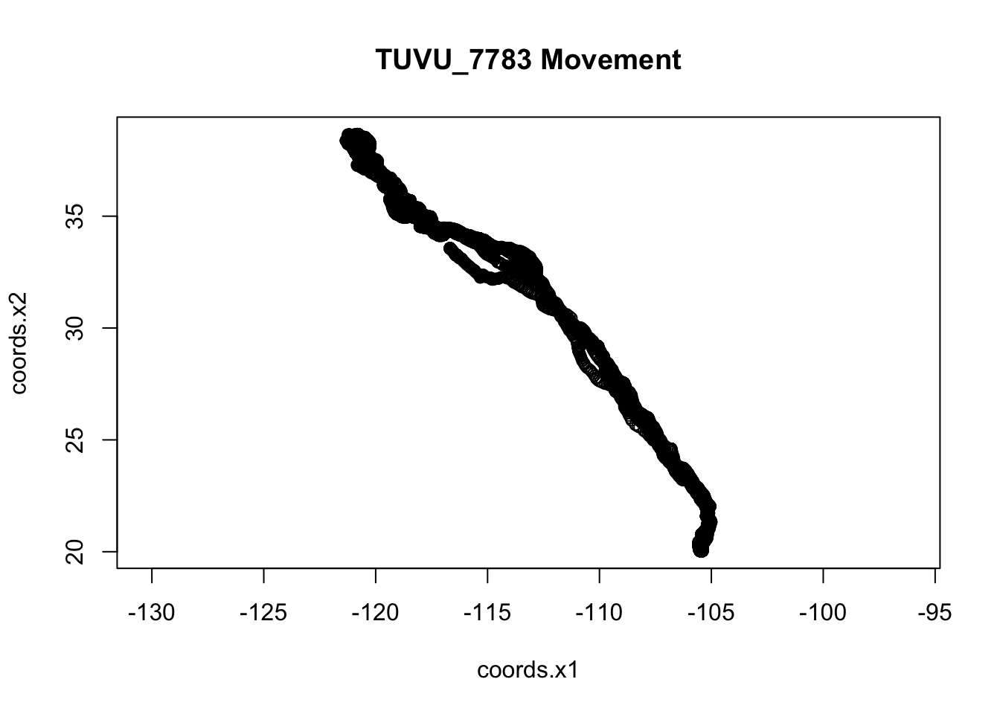</p>
</div>
<div class="sourceCode cell-code" id="cb29"><pre class="sourceCode r code-with-copy"><code class="sourceCode r"><span id="cb29-1"><a href="#cb29-1" aria-hidden="true" tabindex="-1"></a><span class="fu">plot</span>(move_tuvu_7783, </span>
<span id="cb29-2"><a href="#cb29-2" aria-hidden="true" tabindex="-1"></a>     <span class="at">main=</span><span class="st">"TUVU_7783 Movement"</span>,</span>
<span id="cb29-3"><a href="#cb29-3" aria-hidden="true" tabindex="-1"></a>     <span class="at">xlab=</span><span class="st">"Longitude"</span>, </span>
<span id="cb29-4"><a href="#cb29-4" aria-hidden="true" tabindex="-1"></a>     <span class="at">ylab=</span><span class="st">"Latitude"</span>,</span>
<span id="cb29-5"><a href="#cb29-5" aria-hidden="true" tabindex="-1"></a>     <span class="at">type=</span><span class="st">"b"</span>,</span>
<span id="cb29-6"><a href="#cb29-6" aria-hidden="true" tabindex="-1"></a>     <span class="at">pch=</span><span class="dv">16</span>, </span>
<span id="cb29-7"><a href="#cb29-7" aria-hidden="true" tabindex="-1"></a>     <span class="at">cex=</span><span class="fl">0.5</span>)</span></code><button title="Copy to Clipboard" class="code-copy-button"><i class="bi"></i></button></pre></div>
<div class="cell-output-display">
<p>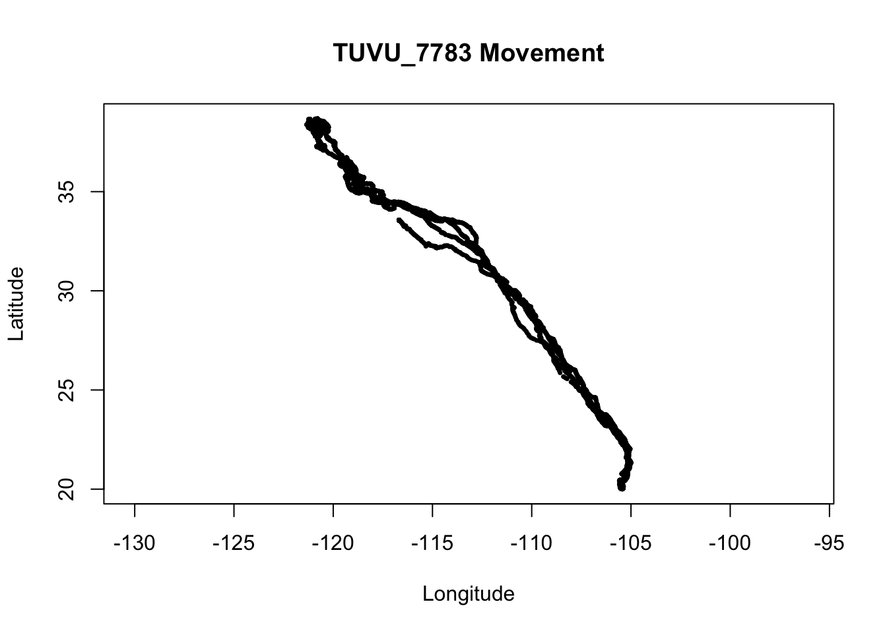</p>
</div>
</div>
</section>
<section id="plot-with-base-maps" class="level3">
<h3 class="anchored" data-anchor-id="plot-with-base-maps">Plot with Base Maps</h3>
<ul>
<li>The data can be plotted with a base map to get a better grasp of location.</li>
</ul>
<div class="cell">
<div class="sourceCode cell-code" id="cb30"><pre class="sourceCode r code-with-copy"><code class="sourceCode r"><span id="cb30-1"><a href="#cb30-1" aria-hidden="true" tabindex="-1"></a><span class="co">#load packages needed</span></span>
<span id="cb30-2"><a href="#cb30-2" aria-hidden="true" tabindex="-1"></a><span class="fu">library</span>(<span class="st">"ggmap"</span>)</span></code><button title="Copy to Clipboard" class="code-copy-button"><i class="bi"></i></button></pre></div>
<div class="cell-output cell-output-stderr">
<pre><code>ℹ Google's Terms of Service: ]8;;https://mapsplatform.google.com&lt;https://mapsplatform.google.com&gt;]8;;
ℹ Please cite ggmap if you use it! Use `citation("ggmap")` for details.</code></pre>
</div>
<div class="sourceCode cell-code" id="cb32"><pre class="sourceCode r code-with-copy"><code class="sourceCode r"><span id="cb32-1"><a href="#cb32-1" aria-hidden="true" tabindex="-1"></a><span class="fu">library</span>(<span class="st">"mapproj"</span>)</span>
<span id="cb32-2"><a href="#cb32-2" aria-hidden="true" tabindex="-1"></a></span>
<span id="cb32-3"><a href="#cb32-3" aria-hidden="true" tabindex="-1"></a><span class="co">#plot basic base map</span></span>
<span id="cb32-4"><a href="#cb32-4" aria-hidden="true" tabindex="-1"></a><span class="fu">map</span>(<span class="st">'worldHires'</span>,</span>
<span id="cb32-5"><a href="#cb32-5" aria-hidden="true" tabindex="-1"></a>    <span class="at">main=</span><span class="st">"TUVU_7783 Movement"</span>,</span>
<span id="cb32-6"><a href="#cb32-6" aria-hidden="true" tabindex="-1"></a>    <span class="at">xlim =</span> move_tuvu_7783<span class="sc">@</span>bbox[<span class="dv">1</span>, ]<span class="sc">+</span><span class="fu">c</span>(<span class="sc">-</span><span class="dv">5</span>,<span class="dv">5</span>), </span>
<span id="cb32-7"><a href="#cb32-7" aria-hidden="true" tabindex="-1"></a>    <span class="at">ylim =</span> move_tuvu_7783<span class="sc">@</span>bbox[<span class="dv">2</span>, ]<span class="sc">+</span><span class="fu">c</span>(<span class="sc">-</span><span class="dv">5</span>,<span class="dv">5</span>),</span>
<span id="cb32-8"><a href="#cb32-8" aria-hidden="true" tabindex="-1"></a>    <span class="at">col=</span><span class="st">"grey"</span>, <span class="at">fill=</span>T)</span>
<span id="cb32-9"><a href="#cb32-9" aria-hidden="true" tabindex="-1"></a><span class="fu">lines</span>(move_tuvu_7783, </span>
<span id="cb32-10"><a href="#cb32-10" aria-hidden="true" tabindex="-1"></a>      <span class="at">col=</span><span class="st">"firebrick"</span>, </span>
<span id="cb32-11"><a href="#cb32-11" aria-hidden="true" tabindex="-1"></a>      <span class="at">lwd=</span><span class="fl">1.5</span>)</span></code><button title="Copy to Clipboard" class="code-copy-button"><i class="bi"></i></button></pre></div>
<div class="cell-output-display">
<p>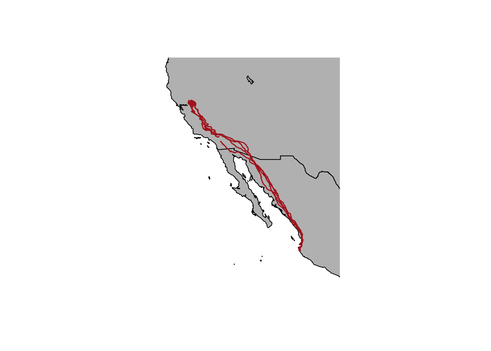</p>
</div>
<div class="sourceCode cell-code" id="cb33"><pre class="sourceCode r code-with-copy"><code class="sourceCode r"><span id="cb33-1"><a href="#cb33-1" aria-hidden="true" tabindex="-1"></a><span class="co">#change the magnification of the graph for better visualizaiton</span></span>
<span id="cb33-2"><a href="#cb33-2" aria-hidden="true" tabindex="-1"></a>(e<span class="ot">&lt;-</span><span class="fu">bbox</span>(<span class="fu">extent</span>(move_tuvu_7783)<span class="sc">*</span><span class="fl">1.1</span>))</span></code><button title="Copy to Clipboard" class="code-copy-button"><i class="bi"></i></button></pre></div>
<div class="cell-output cell-output-stdout">
<pre><code>          min        max
s1 -122.15836 -104.17735
s2   19.07046   39.61611</code></pre>
</div>
<div class="sourceCode cell-code" id="cb35"><pre class="sourceCode r code-with-copy"><code class="sourceCode r"><span id="cb35-1"><a href="#cb35-1" aria-hidden="true" tabindex="-1"></a><span class="co">#create map</span></span>
<span id="cb35-2"><a href="#cb35-2" aria-hidden="true" tabindex="-1"></a><span class="fu">map</span>(<span class="st">'worldHires'</span>, </span>
<span id="cb35-3"><a href="#cb35-3" aria-hidden="true" tabindex="-1"></a>    <span class="at">main=</span><span class="st">"TUVU_7783 Movement"</span>,</span>
<span id="cb35-4"><a href="#cb35-4" aria-hidden="true" tabindex="-1"></a>    <span class="at">xlim =</span> e[<span class="dv">1</span>, ], </span>
<span id="cb35-5"><a href="#cb35-5" aria-hidden="true" tabindex="-1"></a>    <span class="at">ylim =</span> e[<span class="dv">2</span>, ])</span>
<span id="cb35-6"><a href="#cb35-6" aria-hidden="true" tabindex="-1"></a><span class="fu">lines</span>(move_tuvu_7783, </span>
<span id="cb35-7"><a href="#cb35-7" aria-hidden="true" tabindex="-1"></a>      <span class="at">color=</span><span class="st">"firebrick"</span>, </span>
<span id="cb35-8"><a href="#cb35-8" aria-hidden="true" tabindex="-1"></a>      <span class="at">lwd=</span><span class="fl">1.5</span>)</span></code><button title="Copy to Clipboard" class="code-copy-button"><i class="bi"></i></button></pre></div>
<div class="cell-output cell-output-stderr">
<pre><code>Warning in plot.xy(xy.coords(x, y), type = type, ...): "color" is not a
graphical parameter</code></pre>
</div>
<div class="cell-output-display">
<p>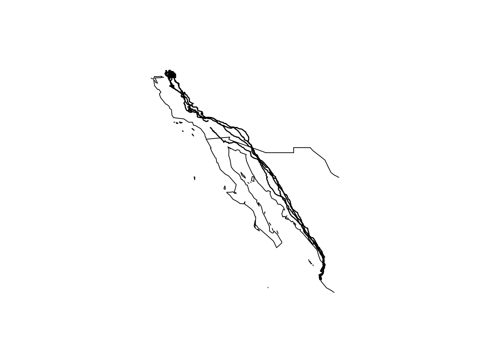</p>
</div>
<div class="sourceCode cell-code" id="cb37"><pre class="sourceCode r code-with-copy"><code class="sourceCode r"><span id="cb37-1"><a href="#cb37-1" aria-hidden="true" tabindex="-1"></a><span class="co">#obtain map from online source</span></span>
<span id="cb37-2"><a href="#cb37-2" aria-hidden="true" tabindex="-1"></a>m <span class="ot">&lt;-</span> <span class="fu">get_map</span>(e, </span>
<span id="cb37-3"><a href="#cb37-3" aria-hidden="true" tabindex="-1"></a>             <span class="at">zoom=</span><span class="dv">7</span>, </span>
<span id="cb37-4"><a href="#cb37-4" aria-hidden="true" tabindex="-1"></a>             <span class="at">source=</span><span class="st">"stamen"</span>,</span>
<span id="cb37-5"><a href="#cb37-5" aria-hidden="true" tabindex="-1"></a>             <span class="at">maptype=</span><span class="st">"terrain"</span>)</span></code><button title="Copy to Clipboard" class="code-copy-button"><i class="bi"></i></button></pre></div>
<div class="cell-output cell-output-stderr">
<pre><code>ℹ Map tiles by Stamen Design, under CC BY 3.0. Data by OpenStreetMap, under ODbL.
ℹ 70 tiles needed, this may take a while (try a smaller zoom?)</code></pre>
</div>
<div class="sourceCode cell-code" id="cb39"><pre class="sourceCode r code-with-copy"><code class="sourceCode r"><span id="cb39-1"><a href="#cb39-1" aria-hidden="true" tabindex="-1"></a><span class="co"># plot the map and add the locations separated by individual id</span></span>
<span id="cb39-2"><a href="#cb39-2" aria-hidden="true" tabindex="-1"></a><span class="fu">ggmap</span>(m)<span class="sc">+</span></span>
<span id="cb39-3"><a href="#cb39-3" aria-hidden="true" tabindex="-1"></a><span class="fu">geom_path</span>(<span class="at">data=</span>tuvu_7783, </span>
<span id="cb39-4"><a href="#cb39-4" aria-hidden="true" tabindex="-1"></a>          <span class="fu">aes</span>(<span class="at">x=</span>lon, <span class="at">y=</span>lat))<span class="sc">+</span></span>
<span id="cb39-5"><a href="#cb39-5" aria-hidden="true" tabindex="-1"></a>  <span class="fu">ggtitle</span>(<span class="st">"TUVU_7783 Movement"</span>)</span></code><button title="Copy to Clipboard" class="code-copy-button"><i class="bi"></i></button></pre></div>
<div class="cell-output-display">
<p>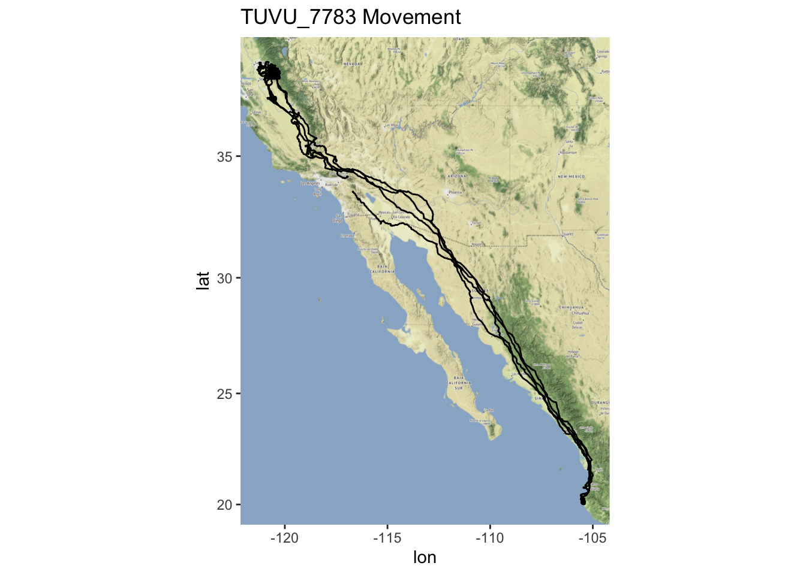</p>
</div>
</div>
</section>
</section>
<section id="first-time-passage" class="level2">
<h2 class="anchored" data-anchor-id="first-time-passage">First Time Passage</h2>
<section id="ftp-with-increasing-radii" class="level3">
<h3 class="anchored" data-anchor-id="ftp-with-increasing-radii">FTP with increasing radii</h3>
<ul>
<li>This graph shows how many days it takes to leave a given area when the area is increasing in size.</li>
</ul>
<div class="cell">
<div class="sourceCode cell-code" id="cb40"><pre class="sourceCode r code-with-copy"><code class="sourceCode r"><span id="cb40-1"><a href="#cb40-1" aria-hidden="true" tabindex="-1"></a><span class="co">#convert to a projection</span></span>
<span id="cb40-2"><a href="#cb40-2" aria-hidden="true" tabindex="-1"></a>prj_tuvu_7783 <span class="ot">&lt;-</span> <span class="fu">spTransform</span>(move_tuvu_7783, <span class="at">center=</span>T)</span>
<span id="cb40-3"><a href="#cb40-3" aria-hidden="true" tabindex="-1"></a></span>
<span id="cb40-4"><a href="#cb40-4" aria-hidden="true" tabindex="-1"></a>prj_tuvu_7783 <span class="ot">&lt;-</span> <span class="fu">fpt</span>(<span class="fu">as</span>(prj_tuvu_7783, <span class="st">"ltraj"</span>), </span>
<span id="cb40-5"><a href="#cb40-5" aria-hidden="true" tabindex="-1"></a>                 <span class="at">radii=</span><span class="dv">10</span><span class="sc">^</span><span class="fu">seq</span>(<span class="dv">3</span>, <span class="dv">6</span>, <span class="at">length.out=</span><span class="dv">150</span>),</span>
<span id="cb40-6"><a href="#cb40-6" aria-hidden="true" tabindex="-1"></a>                 <span class="at">units=</span><span class="st">"days"</span>)</span>
<span id="cb40-7"><a href="#cb40-7" aria-hidden="true" tabindex="-1"></a><span class="co"># calculate mean nb of days to leave each radii </span></span>
<span id="cb40-8"><a href="#cb40-8" aria-hidden="true" tabindex="-1"></a>meanFPT <span class="ot">&lt;-</span> <span class="fu">colMeans</span>(prj_tuvu_7783[[<span class="dv">1</span>]], </span>
<span id="cb40-9"><a href="#cb40-9" aria-hidden="true" tabindex="-1"></a>                    <span class="at">na.rm=</span>T)</span>
<span id="cb40-10"><a href="#cb40-10" aria-hidden="true" tabindex="-1"></a>radiiFPT <span class="ot">&lt;-</span> <span class="fu">attributes</span>(prj_tuvu_7783)<span class="sc">$</span>radii</span>
<span id="cb40-11"><a href="#cb40-11" aria-hidden="true" tabindex="-1"></a><span class="fu">plot</span>(meanFPT<span class="sc">~</span>radiiFPT,</span>
<span id="cb40-12"><a href="#cb40-12" aria-hidden="true" tabindex="-1"></a>     <span class="at">main=</span><span class="st">"TUVU_7783"</span>,</span>
<span id="cb40-13"><a href="#cb40-13" aria-hidden="true" tabindex="-1"></a>     <span class="at">type=</span><span class="st">"l"</span>, </span>
<span id="cb40-14"><a href="#cb40-14" aria-hidden="true" tabindex="-1"></a>     <span class="at">lwd=</span><span class="dv">2</span>, </span>
<span id="cb40-15"><a href="#cb40-15" aria-hidden="true" tabindex="-1"></a>     <span class="at">xlab=</span><span class="st">"Radii in meters"</span>,</span>
<span id="cb40-16"><a href="#cb40-16" aria-hidden="true" tabindex="-1"></a>     <span class="at">ylab=</span><span class="st">"First passage time in days"</span>, <span class="at">log=</span><span class="st">"xy"</span>)</span></code><button title="Copy to Clipboard" class="code-copy-button"><i class="bi"></i></button></pre></div>
<div class="cell-output-display">
<p>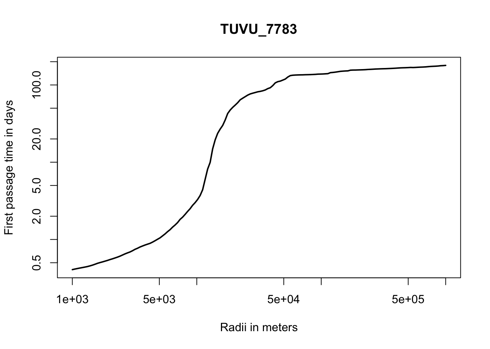</p>
</div>
<div class="sourceCode cell-code" id="cb41"><pre class="sourceCode r code-with-copy"><code class="sourceCode r"><span id="cb41-1"><a href="#cb41-1" aria-hidden="true" tabindex="-1"></a><span class="co">#as the radii increases in size, it takes the animal longer to leave the circle</span></span>
<span id="cb41-2"><a href="#cb41-2" aria-hidden="true" tabindex="-1"></a></span>
<span id="cb41-3"><a href="#cb41-3" aria-hidden="true" tabindex="-1"></a><span class="co"># variance of the log(FPT) #</span></span>
<span id="cb41-4"><a href="#cb41-4" aria-hidden="true" tabindex="-1"></a>vars <span class="ot">&lt;-</span> <span class="fu">varlogfpt</span>(prj_tuvu_7783, <span class="at">graph=</span>F)</span>
<span id="cb41-5"><a href="#cb41-5" aria-hidden="true" tabindex="-1"></a><span class="fu">plot</span>(<span class="fu">as.numeric</span>(vars)<span class="sc">~</span>radiiFPT,</span>
<span id="cb41-6"><a href="#cb41-6" aria-hidden="true" tabindex="-1"></a>     <span class="at">main=</span><span class="st">"TUVU_7783"</span>,</span>
<span id="cb41-7"><a href="#cb41-7" aria-hidden="true" tabindex="-1"></a>     <span class="at">type=</span><span class="st">"l"</span>, </span>
<span id="cb41-8"><a href="#cb41-8" aria-hidden="true" tabindex="-1"></a>     <span class="at">lwd=</span><span class="dv">1</span>, </span>
<span id="cb41-9"><a href="#cb41-9" aria-hidden="true" tabindex="-1"></a>     <span class="at">lty=</span><span class="dv">2</span>, </span>
<span id="cb41-10"><a href="#cb41-10" aria-hidden="true" tabindex="-1"></a>     <span class="at">log=</span><span class="st">"x"</span>, </span>
<span id="cb41-11"><a href="#cb41-11" aria-hidden="true" tabindex="-1"></a>     <span class="at">ylab=</span><span class="st">"Variance of log first passage time"</span>, </span>
<span id="cb41-12"><a href="#cb41-12" aria-hidden="true" tabindex="-1"></a>     <span class="at">xlab=</span><span class="st">"Radius in meters"</span>)</span></code><button title="Copy to Clipboard" class="code-copy-button"><i class="bi"></i></button></pre></div>
<div class="cell-output-display">
<p>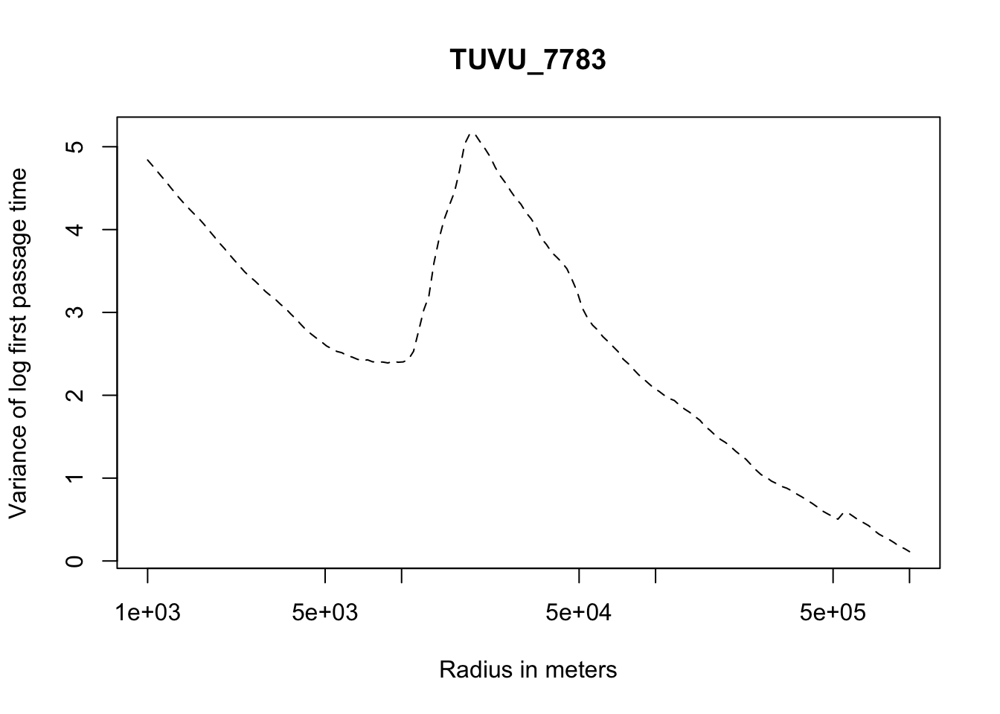</p>
</div>
</div>
</section>
<section id="fpt-in-relation-to-time" class="level3">
<h3 class="anchored" data-anchor-id="fpt-in-relation-to-time">FPT in Relation to Time</h3>
<ul>
<li><p>First three graphs show how there are different slopes on the FPT vs Radii graph.</p></li>
<li><p>The last graph shows how long it takes a bird to leave 4 different size radii over time.</p>
<ul>
<li>The migration patterns can be seen in the largest radii.</li>
</ul></li>
<li><p>The following code is very fancy and complex please visit Animove website for more info.</p></li>
</ul>
<div class="cell">
<div class="sourceCode cell-code" id="cb42"><pre class="sourceCode r code-with-copy"><code class="sourceCode r"><span id="cb42-1"><a href="#cb42-1" aria-hidden="true" tabindex="-1"></a><span class="fu">plot</span>(<span class="fu">log10</span>(meanFPT)<span class="sc">~</span><span class="fu">log10</span>(radiiFPT),</span>
<span id="cb42-2"><a href="#cb42-2" aria-hidden="true" tabindex="-1"></a>     <span class="at">main=</span><span class="st">"TUVU_7783"</span>,</span>
<span id="cb42-3"><a href="#cb42-3" aria-hidden="true" tabindex="-1"></a>     <span class="at">type=</span><span class="st">"l"</span>, </span>
<span id="cb42-4"><a href="#cb42-4" aria-hidden="true" tabindex="-1"></a>     <span class="at">lwd=</span><span class="dv">2</span>, </span>
<span id="cb42-5"><a href="#cb42-5" aria-hidden="true" tabindex="-1"></a>     <span class="at">xlab=</span><span class="st">"Log radii in meters"</span>,</span>
<span id="cb42-6"><a href="#cb42-6" aria-hidden="true" tabindex="-1"></a>     <span class="at">ylab=</span><span class="st">"Log first passage time in days"</span>)</span>
<span id="cb42-7"><a href="#cb42-7" aria-hidden="true" tabindex="-1"></a>lm1 <span class="ot">&lt;-</span> <span class="fu">lm</span>(<span class="fu">log10</span>(meanFPT[<span class="dv">1</span><span class="sc">:</span><span class="fu">which.min</span>(vars[<span class="dv">1</span><span class="sc">:</span><span class="fu">which.max</span>(vars)])])<span class="sc">~</span></span>
<span id="cb42-8"><a href="#cb42-8" aria-hidden="true" tabindex="-1"></a>            <span class="fu">log10</span>(radiiFPT[<span class="dv">1</span><span class="sc">:</span><span class="fu">which.min</span>(vars[<span class="dv">1</span><span class="sc">:</span><span class="fu">which.max</span>(vars)])]))</span>
<span id="cb42-9"><a href="#cb42-9" aria-hidden="true" tabindex="-1"></a>lm2 <span class="ot">&lt;-</span> <span class="fu">lm</span>(<span class="fu">log10</span>(meanFPT[<span class="fu">which.min</span>(vars[<span class="dv">1</span><span class="sc">:</span><span class="fu">which.max</span>(vars)])<span class="sc">:</span><span class="fu">which.max</span>(vars)])<span class="sc">~</span></span>
<span id="cb42-10"><a href="#cb42-10" aria-hidden="true" tabindex="-1"></a>            <span class="fu">log10</span>(radiiFPT[<span class="fu">which.min</span>(vars[<span class="dv">1</span><span class="sc">:</span><span class="fu">which.max</span>(vars)])<span class="sc">:</span><span class="fu">which.max</span>(vars)]))</span>
<span id="cb42-11"><a href="#cb42-11" aria-hidden="true" tabindex="-1"></a><span class="fu">abline</span>(lm1, <span class="at">lty=</span><span class="dv">2</span>)</span>
<span id="cb42-12"><a href="#cb42-12" aria-hidden="true" tabindex="-1"></a><span class="fu">abline</span>(lm2, <span class="at">lty=</span><span class="dv">3</span>)</span>
<span id="cb42-13"><a href="#cb42-13" aria-hidden="true" tabindex="-1"></a><span class="fu">text</span>(<span class="dv">4</span>, <span class="fl">0.1</span>, <span class="fu">paste</span>(<span class="fu">signif</span>(<span class="fu">summary</span>(lm1)<span class="sc">$</span>coefficients[<span class="dv">2</span>,<span class="dv">1</span>], <span class="dv">2</span>), </span>
<span id="cb42-14"><a href="#cb42-14" aria-hidden="true" tabindex="-1"></a>                   <span class="st">"±"</span>, </span>
<span id="cb42-15"><a href="#cb42-15" aria-hidden="true" tabindex="-1"></a>                   <span class="fu">signif</span>(<span class="fu">summary</span>(lm1)<span class="sc">$</span>coefficients[<span class="dv">2</span>,<span class="dv">2</span>], <span class="dv">2</span>)), <span class="at">pos=</span><span class="dv">4</span>, <span class="at">cex=</span><span class="fl">0.75</span>)</span>
<span id="cb42-16"><a href="#cb42-16" aria-hidden="true" tabindex="-1"></a><span class="fu">text</span>(<span class="dv">4</span>, <span class="dv">1</span>, <span class="fu">paste</span>(<span class="fu">signif</span>(<span class="fu">summary</span>(lm2)<span class="sc">$</span>coefficients[<span class="dv">2</span>,<span class="dv">1</span>], <span class="dv">2</span>), </span>
<span id="cb42-17"><a href="#cb42-17" aria-hidden="true" tabindex="-1"></a>                 <span class="st">"±"</span>, </span>
<span id="cb42-18"><a href="#cb42-18" aria-hidden="true" tabindex="-1"></a>                 <span class="fu">signif</span>(<span class="fu">summary</span>(lm2)<span class="sc">$</span>coefficients[<span class="dv">2</span>,<span class="dv">2</span>], <span class="dv">2</span>)), <span class="at">pos=</span><span class="dv">4</span>, <span class="at">cex=</span><span class="fl">0.75</span>)</span></code><button title="Copy to Clipboard" class="code-copy-button"><i class="bi"></i></button></pre></div>
<div class="cell-output-display">
<p>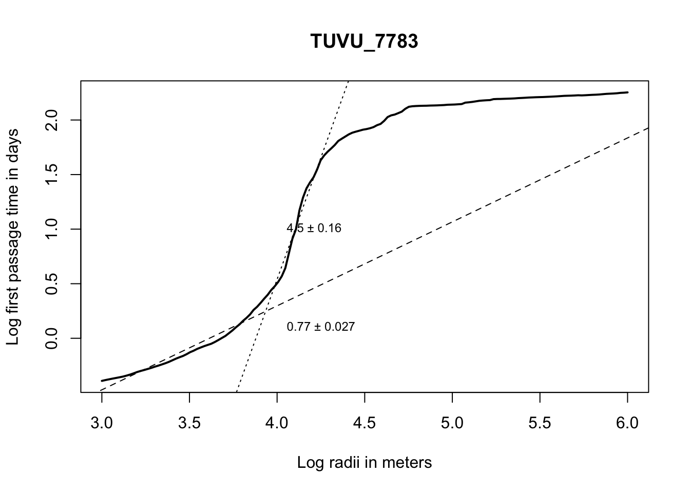</p>
</div>
<div class="sourceCode cell-code" id="cb43"><pre class="sourceCode r code-with-copy"><code class="sourceCode r"><span id="cb43-1"><a href="#cb43-1" aria-hidden="true" tabindex="-1"></a><span class="co"># breaks in the trend of the variance of log(fpt) </span></span>
<span id="cb43-2"><a href="#cb43-2" aria-hidden="true" tabindex="-1"></a><span class="fu">plot</span>(<span class="fu">as.numeric</span>(vars)<span class="sc">~</span>radiiFPT,</span>
<span id="cb43-3"><a href="#cb43-3" aria-hidden="true" tabindex="-1"></a>     <span class="at">main=</span><span class="st">"TUVU_7783"</span>,</span>
<span id="cb43-4"><a href="#cb43-4" aria-hidden="true" tabindex="-1"></a>     <span class="at">type=</span><span class="st">"l"</span>, <span class="at">lwd=</span><span class="dv">1</span>, <span class="at">lty=</span><span class="dv">2</span>, </span>
<span id="cb43-5"><a href="#cb43-5" aria-hidden="true" tabindex="-1"></a>     <span class="at">ylab=</span><span class="st">"Variance of log first passage time"</span>, </span>
<span id="cb43-6"><a href="#cb43-6" aria-hidden="true" tabindex="-1"></a>     <span class="at">xlab=</span><span class="st">"Radius in meters"</span>, <span class="at">log=</span><span class="st">"x"</span>)</span>
<span id="cb43-7"><a href="#cb43-7" aria-hidden="true" tabindex="-1"></a>breaks <span class="ot">&lt;-</span> <span class="fu">which</span>(<span class="fu">diff</span>(<span class="fu">floor</span>(<span class="fu">diff</span>(<span class="fu">as.numeric</span>(vars))))<span class="sc">==-</span><span class="dv">1</span>)<span class="sc">+</span><span class="dv">1</span></span>
<span id="cb43-8"><a href="#cb43-8" aria-hidden="true" tabindex="-1"></a><span class="fu">abline</span>(<span class="at">v=</span>radiiFPT[breaks])</span></code><button title="Copy to Clipboard" class="code-copy-button"><i class="bi"></i></button></pre></div>
<div class="cell-output-display">
<p>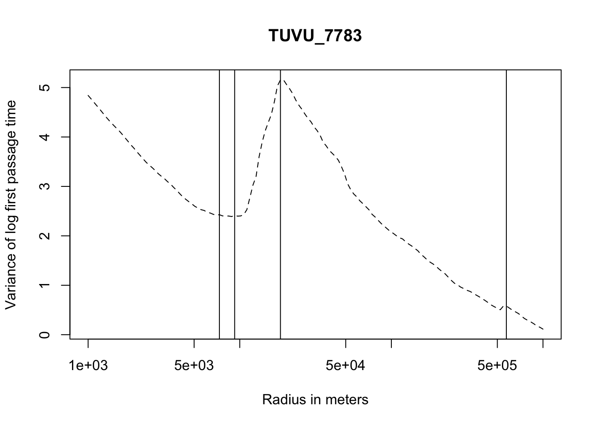</p>
</div>
<div class="sourceCode cell-code" id="cb44"><pre class="sourceCode r code-with-copy"><code class="sourceCode r"><span id="cb44-1"><a href="#cb44-1" aria-hidden="true" tabindex="-1"></a><span class="co"># fitting LM to all changes in slope of variance of log(fpt) ##</span></span>
<span id="cb44-2"><a href="#cb44-2" aria-hidden="true" tabindex="-1"></a><span class="fu">plot</span>(<span class="fu">log10</span>(meanFPT)<span class="sc">~</span><span class="fu">log10</span>(radiiFPT),</span>
<span id="cb44-3"><a href="#cb44-3" aria-hidden="true" tabindex="-1"></a>     <span class="at">main=</span><span class="st">"TUVU_7783"</span>,</span>
<span id="cb44-4"><a href="#cb44-4" aria-hidden="true" tabindex="-1"></a>     <span class="at">type=</span><span class="st">"n"</span>, <span class="at">lwd=</span><span class="dv">4</span>, <span class="at">xlab=</span><span class="st">"Log radii in meters"</span>,</span>
<span id="cb44-5"><a href="#cb44-5" aria-hidden="true" tabindex="-1"></a>     <span class="at">ylab=</span><span class="st">"Log first passage time in days"</span>)</span>
<span id="cb44-6"><a href="#cb44-6" aria-hidden="true" tabindex="-1"></a></span>
<span id="cb44-7"><a href="#cb44-7" aria-hidden="true" tabindex="-1"></a>lm1 <span class="ot">&lt;-</span> <span class="fu">lm</span>(<span class="fu">log10</span>(meanFPT[<span class="dv">1</span><span class="sc">:</span>breaks[<span class="dv">1</span>]])<span class="sc">~</span><span class="fu">log10</span>(radiiFPT[<span class="dv">1</span><span class="sc">:</span>breaks[<span class="dv">1</span>]]))</span>
<span id="cb44-8"><a href="#cb44-8" aria-hidden="true" tabindex="-1"></a>lm2 <span class="ot">&lt;-</span> <span class="fu">lm</span>(<span class="fu">log10</span>(meanFPT[breaks[<span class="dv">1</span>]<span class="sc">:</span>breaks[<span class="dv">2</span>]])<span class="sc">~</span><span class="fu">log10</span>(radiiFPT[breaks[<span class="dv">1</span>]<span class="sc">:</span>breaks[<span class="dv">2</span>]]))</span>
<span id="cb44-9"><a href="#cb44-9" aria-hidden="true" tabindex="-1"></a>lm3 <span class="ot">&lt;-</span> <span class="fu">lm</span>(<span class="fu">log10</span>(meanFPT[breaks[<span class="dv">2</span>]<span class="sc">:</span>breaks[<span class="dv">3</span>]])<span class="sc">~</span><span class="fu">log10</span>(radiiFPT[breaks[<span class="dv">2</span>]<span class="sc">:</span>breaks[<span class="dv">3</span>]]))</span>
<span id="cb44-10"><a href="#cb44-10" aria-hidden="true" tabindex="-1"></a>lm4 <span class="ot">&lt;-</span> <span class="fu">lm</span>(<span class="fu">log10</span>(meanFPT[breaks[<span class="dv">3</span>]<span class="sc">:</span>breaks[<span class="dv">4</span>]])<span class="sc">~</span><span class="fu">log10</span>(radiiFPT[breaks[<span class="dv">3</span>]<span class="sc">:</span>breaks[<span class="dv">4</span>]]))</span>
<span id="cb44-11"><a href="#cb44-11" aria-hidden="true" tabindex="-1"></a>lm5 <span class="ot">&lt;-</span> <span class="fu">lm</span>(<span class="fu">log10</span>(meanFPT[breaks[<span class="dv">4</span>]<span class="sc">:</span><span class="fu">length</span>(<span class="fu">as.numeric</span>(vars))])<span class="sc">~</span><span class="fu">log10</span>(radiiFPT[breaks[<span class="dv">4</span>]<span class="sc">:</span><span class="fu">length</span>(<span class="fu">as.numeric</span>(vars))]))</span>
<span id="cb44-12"><a href="#cb44-12" aria-hidden="true" tabindex="-1"></a></span>
<span id="cb44-13"><a href="#cb44-13" aria-hidden="true" tabindex="-1"></a><span class="fu">abline</span>(lm1, <span class="at">lty=</span><span class="dv">2</span>, <span class="at">lwd=</span><span class="dv">1</span> <span class="sc">+</span> <span class="fu">summary</span>(lm1)<span class="sc">$</span>coefficient[<span class="dv">2</span>,<span class="dv">1</span>], <span class="at">col=</span><span class="fu">alpha</span>(<span class="st">"black"</span>, <span class="fl">0.8</span>))</span>
<span id="cb44-14"><a href="#cb44-14" aria-hidden="true" tabindex="-1"></a><span class="fu">abline</span>(lm2, <span class="at">lty=</span><span class="dv">2</span>, <span class="at">lwd=</span><span class="dv">1</span> <span class="sc">+</span> <span class="fu">summary</span>(lm2)<span class="sc">$</span>coefficient[<span class="dv">2</span>,<span class="dv">1</span>], <span class="at">col=</span><span class="fu">alpha</span>(<span class="st">"black"</span>, <span class="fl">0.8</span>))</span>
<span id="cb44-15"><a href="#cb44-15" aria-hidden="true" tabindex="-1"></a><span class="fu">abline</span>(lm3, <span class="at">lty=</span><span class="dv">2</span>, <span class="at">lwd=</span><span class="dv">1</span> <span class="sc">+</span> <span class="fu">summary</span>(lm3)<span class="sc">$</span>coefficient[<span class="dv">2</span>,<span class="dv">1</span>], <span class="at">col=</span><span class="fu">alpha</span>(<span class="st">"black"</span>, <span class="fl">0.8</span>))</span>
<span id="cb44-16"><a href="#cb44-16" aria-hidden="true" tabindex="-1"></a><span class="fu">abline</span>(lm4, <span class="at">lty=</span><span class="dv">2</span>, <span class="at">lwd=</span><span class="dv">1</span> <span class="sc">+</span> <span class="fu">summary</span>(lm4)<span class="sc">$</span>coefficient[<span class="dv">2</span>,<span class="dv">1</span>], <span class="at">col=</span><span class="fu">alpha</span>(<span class="st">"black"</span>, <span class="fl">0.8</span>))</span>
<span id="cb44-17"><a href="#cb44-17" aria-hidden="true" tabindex="-1"></a><span class="fu">abline</span>(lm5, <span class="at">lty=</span><span class="dv">2</span>, <span class="at">lwd=</span><span class="dv">1</span> <span class="sc">+</span> <span class="fu">summary</span>(lm5)<span class="sc">$</span>coefficient[<span class="dv">2</span>,<span class="dv">1</span>], <span class="at">col=</span><span class="fu">alpha</span>(<span class="st">"black"</span>, <span class="fl">0.8</span>))</span>
<span id="cb44-18"><a href="#cb44-18" aria-hidden="true" tabindex="-1"></a></span>
<span id="cb44-19"><a href="#cb44-19" aria-hidden="true" tabindex="-1"></a><span class="fu">lines</span>(<span class="fu">log10</span>(meanFPT)<span class="sc">~</span><span class="fu">log10</span>(radiiFPT),<span class="at">type=</span><span class="st">"l"</span>, <span class="at">lwd=</span><span class="dv">4</span>, <span class="at">col=</span><span class="fu">alpha</span>(<span class="st">"grey40"</span>, <span class="fl">0.8</span>))</span>
<span id="cb44-20"><a href="#cb44-20" aria-hidden="true" tabindex="-1"></a><span class="fu">legend</span>(<span class="st">"bottomright"</span>,<span class="at">title=</span><span class="st">"Radii (m)"</span>, <span class="at">lty=</span><span class="fu">c</span>(<span class="dv">2</span>,<span class="dv">2</span>,<span class="dv">2</span>,<span class="dv">2</span>,<span class="dv">2</span>), </span>
<span id="cb44-21"><a href="#cb44-21" aria-hidden="true" tabindex="-1"></a>       <span class="at">lwd=</span><span class="fu">signif</span>(<span class="fu">c</span>(<span class="dv">1</span><span class="sc">+</span><span class="fu">summary</span>(lm1)<span class="sc">$</span>coefficient[<span class="dv">2</span>,<span class="dv">1</span>],</span>
<span id="cb44-22"><a href="#cb44-22" aria-hidden="true" tabindex="-1"></a>                    <span class="dv">1</span><span class="sc">+</span><span class="fu">summary</span>(lm2)<span class="sc">$</span>coefficient[<span class="dv">2</span>,<span class="dv">1</span>],</span>
<span id="cb44-23"><a href="#cb44-23" aria-hidden="true" tabindex="-1"></a>                    <span class="dv">1</span><span class="sc">+</span><span class="fu">summary</span>(lm3)<span class="sc">$</span>coefficient[<span class="dv">2</span>,<span class="dv">1</span>],</span>
<span id="cb44-24"><a href="#cb44-24" aria-hidden="true" tabindex="-1"></a>                    <span class="dv">1</span><span class="sc">+</span><span class="fu">summary</span>(lm4)<span class="sc">$</span>coefficient[<span class="dv">2</span>,<span class="dv">1</span>],</span>
<span id="cb44-25"><a href="#cb44-25" aria-hidden="true" tabindex="-1"></a>                    <span class="dv">1</span><span class="sc">+</span><span class="fu">summary</span>(lm5)<span class="sc">$</span>coefficient[<span class="dv">2</span>,<span class="dv">1</span>]),<span class="dv">2</span>),</span>
<span id="cb44-26"><a href="#cb44-26" aria-hidden="true" tabindex="-1"></a>       <span class="fu">c</span>(<span class="fu">paste</span>(<span class="fu">c</span>(<span class="dv">1000</span>, <span class="fu">round</span>(radiiFPT[breaks],<span class="dv">0</span>))[<span class="dv">1</span><span class="sc">:</span><span class="dv">2</span>], <span class="at">collapse=</span><span class="st">" - "</span>),</span>
<span id="cb44-27"><a href="#cb44-27" aria-hidden="true" tabindex="-1"></a>         <span class="fu">paste</span>(<span class="fu">c</span>(<span class="dv">1000</span>, <span class="fu">round</span>(radiiFPT[breaks],<span class="dv">0</span>))[<span class="dv">2</span><span class="sc">:</span><span class="dv">3</span>], <span class="at">collapse=</span><span class="st">" - "</span>),</span>
<span id="cb44-28"><a href="#cb44-28" aria-hidden="true" tabindex="-1"></a>         <span class="fu">paste</span>(<span class="fu">c</span>(<span class="dv">1000</span>, <span class="fu">round</span>(radiiFPT[breaks],<span class="dv">0</span>))[<span class="dv">3</span><span class="sc">:</span><span class="dv">4</span>], <span class="at">collapse=</span><span class="st">" - "</span>),</span>
<span id="cb44-29"><a href="#cb44-29" aria-hidden="true" tabindex="-1"></a>         <span class="fu">paste</span>(<span class="fu">c</span>(<span class="dv">1000</span>, <span class="fu">round</span>(radiiFPT[breaks],<span class="dv">0</span>))[<span class="dv">4</span><span class="sc">:</span><span class="dv">5</span>], <span class="at">collapse=</span><span class="st">" - "</span>),</span>
<span id="cb44-30"><a href="#cb44-30" aria-hidden="true" tabindex="-1"></a>         <span class="fu">paste</span>(<span class="fu">c</span>(<span class="fu">round</span>(radiiFPT[breaks],<span class="dv">0</span>)[<span class="dv">4</span>], <span class="dv">100000</span>), <span class="at">collapse=</span><span class="st">" - "</span>)),</span>
<span id="cb44-31"><a href="#cb44-31" aria-hidden="true" tabindex="-1"></a>         <span class="at">bty=</span><span class="st">"n"</span>, <span class="at">cex=</span><span class="fl">0.75</span>)</span></code><button title="Copy to Clipboard" class="code-copy-button"><i class="bi"></i></button></pre></div>
<div class="cell-output-display">
<p>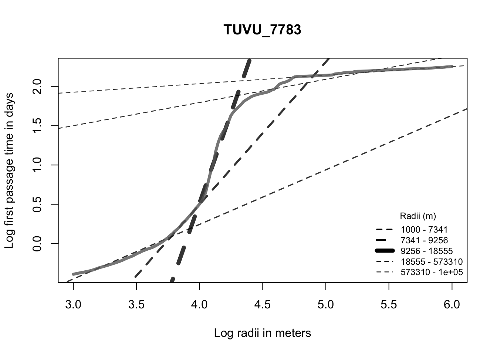</p>
</div>
<div class="sourceCode cell-code" id="cb45"><pre class="sourceCode r code-with-copy"><code class="sourceCode r"><span id="cb45-1"><a href="#cb45-1" aria-hidden="true" tabindex="-1"></a><span class="co"># FPT at the 4 different scales</span></span>
<span id="cb45-2"><a href="#cb45-2" aria-hidden="true" tabindex="-1"></a><span class="fu">par</span>(<span class="at">mfrow=</span><span class="fu">c</span>(<span class="dv">2</span>,<span class="dv">2</span>))</span>
<span id="cb45-3"><a href="#cb45-3" aria-hidden="true" tabindex="-1"></a><span class="cf">for</span>(i <span class="cf">in</span> <span class="dv">4</span><span class="sc">:</span><span class="dv">1</span>){</span>
<span id="cb45-4"><a href="#cb45-4" aria-hidden="true" tabindex="-1"></a>  <span class="fu">plot</span>(prj_tuvu_7783[[<span class="dv">1</span>]][,breaks[i]]<span class="sc">~</span> move_tuvu_7783<span class="sc">@</span>timestamps, </span>
<span id="cb45-5"><a href="#cb45-5" aria-hidden="true" tabindex="-1"></a>       <span class="at">type=</span><span class="st">"n"</span>,</span>
<span id="cb45-6"><a href="#cb45-6" aria-hidden="true" tabindex="-1"></a>       <span class="at">xlab=</span><span class="st">"Time"</span>, </span>
<span id="cb45-7"><a href="#cb45-7" aria-hidden="true" tabindex="-1"></a>       <span class="at">ylab=</span><span class="st">"FPT (days)"</span>,</span>
<span id="cb45-8"><a href="#cb45-8" aria-hidden="true" tabindex="-1"></a>       <span class="at">main=</span> <span class="fu">paste</span>(<span class="st">"TUVU_7783 Radius"</span>, </span>
<span id="cb45-9"><a href="#cb45-9" aria-hidden="true" tabindex="-1"></a>       <span class="fu">round</span>(radiiFPT[breaks[i]],<span class="dv">0</span>), <span class="st">"meters"</span>),</span>
<span id="cb45-10"><a href="#cb45-10" aria-hidden="true" tabindex="-1"></a>       <span class="at">bty=</span><span class="st">"n"</span>)</span>
<span id="cb45-11"><a href="#cb45-11" aria-hidden="true" tabindex="-1"></a>  <span class="fu">points</span>(prj_tuvu_7783[[<span class="dv">1</span>]][,breaks[i]]<span class="sc">~</span> move_tuvu_7783<span class="sc">@</span>timestamps, </span>
<span id="cb45-12"><a href="#cb45-12" aria-hidden="true" tabindex="-1"></a>         <span class="at">pch=</span><span class="dv">16</span>, </span>
<span id="cb45-13"><a href="#cb45-13" aria-hidden="true" tabindex="-1"></a>         <span class="at">col=</span><span class="fu">alpha</span>(<span class="st">"grey"</span>, <span class="fl">0.1</span>))</span>
<span id="cb45-14"><a href="#cb45-14" aria-hidden="true" tabindex="-1"></a>  <span class="fu">lines</span>(prj_tuvu_7783[[<span class="dv">1</span>]][,breaks[i]]<span class="sc">~</span> move_tuvu_7783<span class="sc">@</span>timestamps)}</span></code><button title="Copy to Clipboard" class="code-copy-button"><i class="bi"></i></button></pre></div>
<div class="cell-output-display">
<p>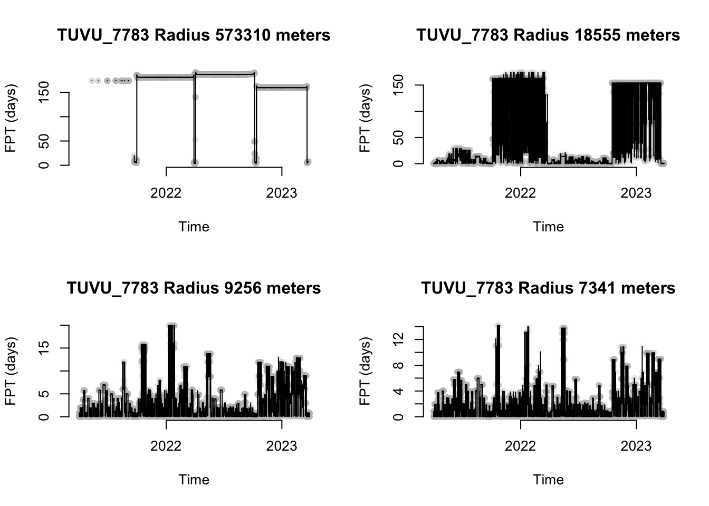</p>
</div>
<div class="sourceCode cell-code" id="cb46"><pre class="sourceCode r code-with-copy"><code class="sourceCode r"><span id="cb46-1"><a href="#cb46-1" aria-hidden="true" tabindex="-1"></a><span class="fu">par</span>(<span class="at">mfrow=</span><span class="fu">c</span>(<span class="dv">1</span>,<span class="dv">1</span>))</span></code><button title="Copy to Clipboard" class="code-copy-button"><i class="bi"></i></button></pre></div>
</div>
</section>
</section>
<section id="circular-visuals" class="level2">
<h2 class="anchored" data-anchor-id="circular-visuals">Circular Visuals</h2>
<section id="creating-azimuth" class="level3">
<h3 class="anchored" data-anchor-id="creating-azimuth">Creating azimuth</h3>
<ul>
<li>Azimuth is needed to create a circular visualization of the data.</li>
</ul>
<div class="cell">
<div class="sourceCode cell-code" id="cb47"><pre class="sourceCode r code-with-copy"><code class="sourceCode r"><span id="cb47-1"><a href="#cb47-1" aria-hidden="true" tabindex="-1"></a><span class="co">#Filter out days before 2022</span></span>
<span id="cb47-2"><a href="#cb47-2" aria-hidden="true" tabindex="-1"></a>tuvu_7783_22<span class="ot">&lt;-</span><span class="fu">filter</span>(tuvu_7783, DateTime<span class="sc">&gt;</span><span class="st">'2022-01-01 00:00:00'</span>)</span>
<span id="cb47-3"><a href="#cb47-3" aria-hidden="true" tabindex="-1"></a></span>
<span id="cb47-4"><a href="#cb47-4" aria-hidden="true" tabindex="-1"></a><span class="co">#filter out days after 2022</span></span>
<span id="cb47-5"><a href="#cb47-5" aria-hidden="true" tabindex="-1"></a>tuvu_7783_22<span class="ot">&lt;-</span><span class="fu">filter</span>(tuvu_7783_22, DateTime<span class="sc">&lt;</span><span class="st">'2023-01-01 00:00:00'</span>)</span>
<span id="cb47-6"><a href="#cb47-6" aria-hidden="true" tabindex="-1"></a></span>
<span id="cb47-7"><a href="#cb47-7" aria-hidden="true" tabindex="-1"></a><span class="co">#convert to Data.frame</span></span>
<span id="cb47-8"><a href="#cb47-8" aria-hidden="true" tabindex="-1"></a>move_tuvu_7783_22<span class="ot">&lt;-</span> methods<span class="sc">::</span><span class="fu">as</span>(tuvu_7783_22, </span>
<span id="cb47-9"><a href="#cb47-9" aria-hidden="true" tabindex="-1"></a>                             <span class="st">"data.frame"</span>)</span>
<span id="cb47-10"><a href="#cb47-10" aria-hidden="true" tabindex="-1"></a></span>
<span id="cb47-11"><a href="#cb47-11" aria-hidden="true" tabindex="-1"></a><span class="co">#convert to move</span></span>
<span id="cb47-12"><a href="#cb47-12" aria-hidden="true" tabindex="-1"></a>move_tuvu_7783_22 <span class="ot">&lt;-</span> <span class="fu">df2move</span>(move_tuvu_7783_22, </span>
<span id="cb47-13"><a href="#cb47-13" aria-hidden="true" tabindex="-1"></a>                          <span class="at">proj =</span> <span class="st">"+proj=longlat +datum=WGS84 +no_defs"</span>, </span>
<span id="cb47-14"><a href="#cb47-14" aria-hidden="true" tabindex="-1"></a>                          <span class="at">time =</span> <span class="st">"DateTime"</span>, </span>
<span id="cb47-15"><a href="#cb47-15" aria-hidden="true" tabindex="-1"></a>                          <span class="at">x =</span> <span class="st">"lon"</span>, </span>
<span id="cb47-16"><a href="#cb47-16" aria-hidden="true" tabindex="-1"></a>                          <span class="at">y =</span> <span class="st">"lat"</span>, </span>
<span id="cb47-17"><a href="#cb47-17" aria-hidden="true" tabindex="-1"></a>                          <span class="at">track_id =</span> <span class="st">"id"</span>,</span>
<span id="cb47-18"><a href="#cb47-18" aria-hidden="true" tabindex="-1"></a>                          <span class="at">data =</span> <span class="cn">NULL</span> )</span></code><button title="Copy to Clipboard" class="code-copy-button"><i class="bi"></i></button></pre></div>
</div>
<div class="cell">
<div class="sourceCode cell-code" id="cb48"><pre class="sourceCode r code-with-copy"><code class="sourceCode r"><span id="cb48-1"><a href="#cb48-1" aria-hidden="true" tabindex="-1"></a><span class="fu">library</span>(circular)</span></code><button title="Copy to Clipboard" class="code-copy-button"><i class="bi"></i></button></pre></div>
<div class="cell-output cell-output-stderr">
<pre><code>
Attaching package: 'circular'</code></pre>
</div>
<div class="cell-output cell-output-stderr">
<pre><code>The following object is masked from 'package:ggmap':

    wind</code></pre>
</div>
<div class="cell-output cell-output-stderr">
<pre><code>The following objects are masked from 'package:CircStats':

    A1, A1inv, deg, I.0, I.1, I.p, pp.plot, rad, rose.diag, rstable</code></pre>
</div>
<div class="cell-output cell-output-stderr">
<pre><code>The following objects are masked from 'package:stats':

    sd, var</code></pre>
</div>
<div class="sourceCode cell-code" id="cb53"><pre class="sourceCode r code-with-copy"><code class="sourceCode r"><span id="cb53-1"><a href="#cb53-1" aria-hidden="true" tabindex="-1"></a><span class="co"># store the information in a new data frame</span></span>
<span id="cb53-2"><a href="#cb53-2" aria-hidden="true" tabindex="-1"></a>azimuth <span class="ot">&lt;-</span> <span class="fu">data.frame</span>(<span class="at">D=</span><span class="fu">angle</span>(move_tuvu_7783_22),</span>
<span id="cb53-3"><a href="#cb53-3" aria-hidden="true" tabindex="-1"></a>                      <span class="at">V=</span><span class="fu">speed</span>(move_tuvu_7783_22), </span>
<span id="cb53-4"><a href="#cb53-4" aria-hidden="true" tabindex="-1"></a>                      <span class="at">Season=</span>tuvu_7783_22<span class="sc">$</span>groups[<span class="sc">-</span><span class="dv">1</span>])</span>
<span id="cb53-5"><a href="#cb53-5" aria-hidden="true" tabindex="-1"></a><span class="co"># Define the direction as a circular</span></span>
<span id="cb53-6"><a href="#cb53-6" aria-hidden="true" tabindex="-1"></a>azimuth<span class="sc">$</span>Dcirc<span class="ot">&lt;-</span><span class="fu">as.circular</span>(azimuth<span class="sc">$</span>D, </span>
<span id="cb53-7"><a href="#cb53-7" aria-hidden="true" tabindex="-1"></a>                 <span class="at">rotation=</span><span class="st">"clock"</span>, </span>
<span id="cb53-8"><a href="#cb53-8" aria-hidden="true" tabindex="-1"></a>                 <span class="at">units=</span><span class="st">"degrees"</span>, </span>
<span id="cb53-9"><a href="#cb53-9" aria-hidden="true" tabindex="-1"></a>                 <span class="at">type=</span><span class="st">"angles"</span>, </span>
<span id="cb53-10"><a href="#cb53-10" aria-hidden="true" tabindex="-1"></a>                 <span class="at">modulo=</span><span class="st">"asis"</span>, </span>
<span id="cb53-11"><a href="#cb53-11" aria-hidden="true" tabindex="-1"></a>                 <span class="at">zero=</span><span class="dv">0</span>, </span>
<span id="cb53-12"><a href="#cb53-12" aria-hidden="true" tabindex="-1"></a>                 <span class="at">template=</span><span class="st">"geographic"</span>)</span>
<span id="cb53-13"><a href="#cb53-13" aria-hidden="true" tabindex="-1"></a><span class="co"># select segments above 2 m/s, we are only interested in segments when 7783 is moving.</span></span>
<span id="cb53-14"><a href="#cb53-14" aria-hidden="true" tabindex="-1"></a>azimuth <span class="ot">&lt;-</span> azimuth[azimuth<span class="sc">$</span>V<span class="sc">&gt;=</span><span class="dv">2</span>,]</span>
<span id="cb53-15"><a href="#cb53-15" aria-hidden="true" tabindex="-1"></a><span class="co"># remove missing values</span></span>
<span id="cb53-16"><a href="#cb53-16" aria-hidden="true" tabindex="-1"></a>azimuth <span class="ot">&lt;-</span> azimuth[<span class="fu">complete.cases</span>(azimuth),]</span>
<span id="cb53-17"><a href="#cb53-17" aria-hidden="true" tabindex="-1"></a><span class="co"># define a vector that is used to set the order of plotting</span></span>
<span id="cb53-18"><a href="#cb53-18" aria-hidden="true" tabindex="-1"></a>seasons <span class="ot">&lt;-</span> <span class="fu">levels</span>(tuvu_7783_22<span class="sc">$</span>groups)</span></code><button title="Copy to Clipboard" class="code-copy-button"><i class="bi"></i></button></pre></div>
</div>
</section>
<section id="direction-of-travel" class="level3">
<h3 class="anchored" data-anchor-id="direction-of-travel">Direction of Travel</h3>
<ul>
<li>It can be seen that 7783 moves north during northern migration and south during southern migration.</li>
</ul>
<div class="cell">
<div class="sourceCode cell-code" id="cb54"><pre class="sourceCode r code-with-copy"><code class="sourceCode r"><span id="cb54-1"><a href="#cb54-1" aria-hidden="true" tabindex="-1"></a><span class="co"># change margins of plot</span></span>
<span id="cb54-2"><a href="#cb54-2" aria-hidden="true" tabindex="-1"></a><span class="fu">par</span>(<span class="at">mar=</span><span class="fu">rep</span>(<span class="dv">1</span>,<span class="dv">4</span>))</span>
<span id="cb54-3"><a href="#cb54-3" aria-hidden="true" tabindex="-1"></a><span class="co"># plot all the azimuths</span></span>
<span id="cb54-4"><a href="#cb54-4" aria-hidden="true" tabindex="-1"></a><span class="fu">plot</span>(azimuth<span class="sc">$</span>Dcirc, </span>
<span id="cb54-5"><a href="#cb54-5" aria-hidden="true" tabindex="-1"></a>     <span class="at">main=</span><span class="st">"TUVU_7783 Direction"</span>,</span>
<span id="cb54-6"><a href="#cb54-6" aria-hidden="true" tabindex="-1"></a>     <span class="at">stack=</span>T, </span>
<span id="cb54-7"><a href="#cb54-7" aria-hidden="true" tabindex="-1"></a>     <span class="at">shrink=</span><span class="fl">1.6</span>,</span>
<span id="cb54-8"><a href="#cb54-8" aria-hidden="true" tabindex="-1"></a>     <span class="at">pch=</span><span class="dv">16</span>, </span>
<span id="cb54-9"><a href="#cb54-9" aria-hidden="true" tabindex="-1"></a>     <span class="at">sep=</span><span class="fl">0.05</span>, </span>
<span id="cb54-10"><a href="#cb54-10" aria-hidden="true" tabindex="-1"></a>     <span class="at">col=</span><span class="st">"grey"</span>)</span>
<span id="cb54-11"><a href="#cb54-11" aria-hidden="true" tabindex="-1"></a><span class="co"># loop through seasons and plot a line denisty per season</span></span>
<span id="cb54-12"><a href="#cb54-12" aria-hidden="true" tabindex="-1"></a><span class="cf">for</span>(i <span class="cf">in</span> <span class="dv">1</span><span class="sc">:</span><span class="fu">length</span>(seasons)){</span>
<span id="cb54-13"><a href="#cb54-13" aria-hidden="true" tabindex="-1"></a>  <span class="co"># subset the azimuth</span></span>
<span id="cb54-14"><a href="#cb54-14" aria-hidden="true" tabindex="-1"></a>  x <span class="ot">&lt;-</span> azimuth[azimuth<span class="sc">$</span>Season<span class="sc">==</span>seasons[i],<span class="st">'Dcirc'</span>]</span>
<span id="cb54-15"><a href="#cb54-15" aria-hidden="true" tabindex="-1"></a>  <span class="co"># calculate density and plot as a line</span></span>
<span id="cb54-16"><a href="#cb54-16" aria-hidden="true" tabindex="-1"></a>  <span class="fu">lines</span>(<span class="fu">density</span>(x, </span>
<span id="cb54-17"><a href="#cb54-17" aria-hidden="true" tabindex="-1"></a>                <span class="at">bw=</span><span class="dv">180</span>, </span>
<span id="cb54-18"><a href="#cb54-18" aria-hidden="true" tabindex="-1"></a>                <span class="at">kernel=</span><span class="st">"vonmises"</span>), </span>
<span id="cb54-19"><a href="#cb54-19" aria-hidden="true" tabindex="-1"></a>        <span class="at">lwd=</span><span class="dv">2</span>, </span>
<span id="cb54-20"><a href="#cb54-20" aria-hidden="true" tabindex="-1"></a>        <span class="at">lty=</span>i)</span>
<span id="cb54-21"><a href="#cb54-21" aria-hidden="true" tabindex="-1"></a>  <span class="co"># draw an arrow showing mean and resultant length</span></span>
<span id="cb54-22"><a href="#cb54-22" aria-hidden="true" tabindex="-1"></a>  <span class="fu">arrows.circular</span>(<span class="fu">mean</span>(x), <span class="at">y=</span><span class="fu">rho.circular</span>(x), <span class="at">lwd=</span><span class="dv">2</span>, <span class="at">length=</span><span class="fl">0.1</span>, <span class="at">lty=</span>i)</span>
<span id="cb54-23"><a href="#cb54-23" aria-hidden="true" tabindex="-1"></a>}</span>
<span id="cb54-24"><a href="#cb54-24" aria-hidden="true" tabindex="-1"></a><span class="co"># add a legend</span></span>
<span id="cb54-25"><a href="#cb54-25" aria-hidden="true" tabindex="-1"></a><span class="fu">legend</span>(<span class="st">"bottomleft"</span>, </span>
<span id="cb54-26"><a href="#cb54-26" aria-hidden="true" tabindex="-1"></a>       <span class="at">lty=</span><span class="fu">c</span>(<span class="dv">1</span>,<span class="dv">2</span>,<span class="dv">3</span>,<span class="dv">4</span>), </span>
<span id="cb54-27"><a href="#cb54-27" aria-hidden="true" tabindex="-1"></a>       seasons, </span>
<span id="cb54-28"><a href="#cb54-28" aria-hidden="true" tabindex="-1"></a>       <span class="at">bty=</span><span class="st">"n"</span>, </span>
<span id="cb54-29"><a href="#cb54-29" aria-hidden="true" tabindex="-1"></a>       <span class="at">cex=</span><span class="fl">0.85</span>)</span></code><button title="Copy to Clipboard" class="code-copy-button"><i class="bi"></i></button></pre></div>
<div class="cell-output-display">
<p>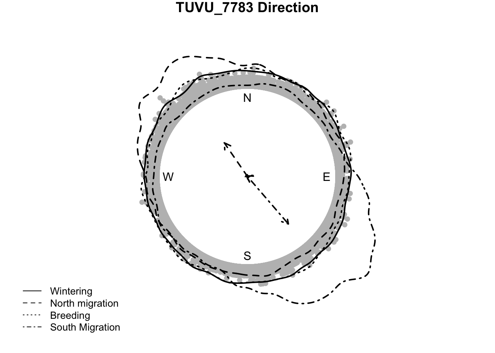</p>
</div>
</div>
</section>
<section id="speed-in-relation-to-direction" class="level3">
<h3 class="anchored" data-anchor-id="speed-in-relation-to-direction">Speed in relation to Direction</h3>
<ul>
<li><p>Another helpful visualization is to view the speed in relation to direction and season.</p>
<ul>
<li>It can be seen the 7783 moves faster during migration.</li>
</ul></li>
</ul>
<div class="cell">
<div class="sourceCode cell-code" id="cb55"><pre class="sourceCode r code-with-copy"><code class="sourceCode r"><span id="cb55-1"><a href="#cb55-1" aria-hidden="true" tabindex="-1"></a><span class="co"># speed ~ azimuth scatter plot #</span></span>
<span id="cb55-2"><a href="#cb55-2" aria-hidden="true" tabindex="-1"></a><span class="fu">library</span>(scales)</span>
<span id="cb55-3"><a href="#cb55-3" aria-hidden="true" tabindex="-1"></a><span class="fu">plot</span>(<span class="fu">speed</span>(move_tuvu_7783_22)<span class="sc">~</span><span class="fu">angle</span>(move_tuvu_7783_22),</span>
<span id="cb55-4"><a href="#cb55-4" aria-hidden="true" tabindex="-1"></a>     <span class="at">main=</span><span class="st">"TUVU_7783 Speed"</span>,</span>
<span id="cb55-5"><a href="#cb55-5" aria-hidden="true" tabindex="-1"></a>     <span class="at">ylab=</span><span class="st">"Speed in m/s"</span>, </span>
<span id="cb55-6"><a href="#cb55-6" aria-hidden="true" tabindex="-1"></a>     <span class="at">xlab=</span><span class="st">"Azimuth in degrees"</span>, </span>
<span id="cb55-7"><a href="#cb55-7" aria-hidden="true" tabindex="-1"></a>     <span class="at">type=</span><span class="st">"n"</span>, </span>
<span id="cb55-8"><a href="#cb55-8" aria-hidden="true" tabindex="-1"></a>     <span class="at">bty=</span><span class="st">"n"</span>)</span>
<span id="cb55-9"><a href="#cb55-9" aria-hidden="true" tabindex="-1"></a><span class="fu">points</span>(<span class="fu">speed</span>(move_tuvu_7783_22)<span class="sc">~</span><span class="fu">angle</span>(move_tuvu_7783_22), <span class="at">ylim=</span><span class="fu">c</span>(<span class="dv">0</span>,<span class="dv">20</span>),</span>
<span id="cb55-10"><a href="#cb55-10" aria-hidden="true" tabindex="-1"></a>     <span class="at">ylab=</span><span class="st">"Speed in m/s"</span>, </span>
<span id="cb55-11"><a href="#cb55-11" aria-hidden="true" tabindex="-1"></a>     <span class="at">xlab=</span><span class="st">"Azimuth in degrees"</span>, </span>
<span id="cb55-12"><a href="#cb55-12" aria-hidden="true" tabindex="-1"></a>     <span class="at">pch=</span><span class="dv">16</span>, </span>
<span id="cb55-13"><a href="#cb55-13" aria-hidden="true" tabindex="-1"></a>     <span class="at">col=</span><span class="fu">alpha</span>(<span class="st">"black"</span>, <span class="fl">0.3</span>))</span></code><button title="Copy to Clipboard" class="code-copy-button"><i class="bi"></i></button></pre></div>
<div class="cell-output-display">
<p>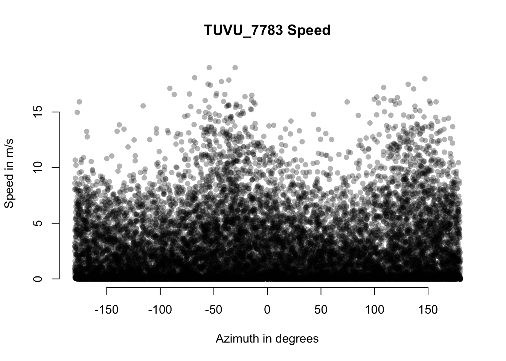</p>
</div>
<div class="sourceCode cell-code" id="cb56"><pre class="sourceCode r code-with-copy"><code class="sourceCode r"><span id="cb56-1"><a href="#cb56-1" aria-hidden="true" tabindex="-1"></a><span class="co"># wind rose of azimuth and speed per season</span></span>
<span id="cb56-2"><a href="#cb56-2" aria-hidden="true" tabindex="-1"></a><span class="fu">par</span>(<span class="fu">list</span>(<span class="at">mfrow=</span><span class="fu">c</span>(<span class="dv">2</span>,<span class="dv">2</span>)))</span>
<span id="cb56-3"><a href="#cb56-3" aria-hidden="true" tabindex="-1"></a><span class="cf">for</span>(i <span class="cf">in</span> seasons){</span>
<span id="cb56-4"><a href="#cb56-4" aria-hidden="true" tabindex="-1"></a>  <span class="fu">windrose</span>(<span class="at">x=</span>azimuth[azimuth<span class="sc">$</span>Season<span class="sc">==</span>i,<span class="st">'Dcirc'</span>], </span>
<span id="cb56-5"><a href="#cb56-5" aria-hidden="true" tabindex="-1"></a>           <span class="at">y=</span>azimuth[azimuth<span class="sc">$</span>Season<span class="sc">==</span>i,<span class="st">'V'</span>],</span>
<span id="cb56-6"><a href="#cb56-6" aria-hidden="true" tabindex="-1"></a>           <span class="at">main=</span> i, </span>
<span id="cb56-7"><a href="#cb56-7" aria-hidden="true" tabindex="-1"></a>           <span class="at">plot.mids=</span>T, </span>
<span id="cb56-8"><a href="#cb56-8" aria-hidden="true" tabindex="-1"></a>           <span class="at">cir.ind =</span> <span class="fl">0.2</span>, </span>
<span id="cb56-9"><a href="#cb56-9" aria-hidden="true" tabindex="-1"></a>           <span class="at">mids.size=</span><span class="dv">1</span>, </span>
<span id="cb56-10"><a href="#cb56-10" aria-hidden="true" tabindex="-1"></a>           <span class="at">increment=</span><span class="dv">5</span>, </span>
<span id="cb56-11"><a href="#cb56-11" aria-hidden="true" tabindex="-1"></a>           <span class="at">bins=</span><span class="dv">36</span>, </span>
<span id="cb56-12"><a href="#cb56-12" aria-hidden="true" tabindex="-1"></a>           <span class="at">fill.col=</span><span class="fu">grey</span>(<span class="fu">seq</span>(<span class="dv">1</span>,<span class="dv">0</span>, <span class="at">length.out=</span><span class="dv">6</span>)),</span>
<span id="cb56-13"><a href="#cb56-13" aria-hidden="true" tabindex="-1"></a>           <span class="at">shrink=</span><span class="fl">1.2</span>)</span>
<span id="cb56-14"><a href="#cb56-14" aria-hidden="true" tabindex="-1"></a>}</span></code><button title="Copy to Clipboard" class="code-copy-button"><i class="bi"></i></button></pre></div>
<div class="cell-output-display">
<p>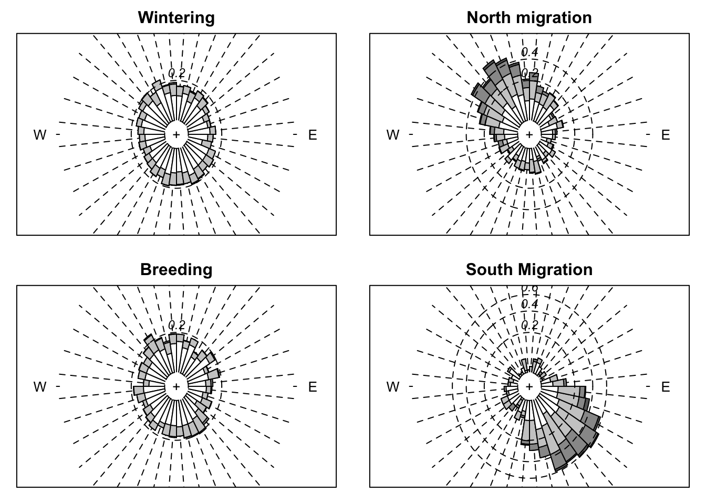</p>
</div>
<div class="sourceCode cell-code" id="cb57"><pre class="sourceCode r code-with-copy"><code class="sourceCode r"><span id="cb57-1"><a href="#cb57-1" aria-hidden="true" tabindex="-1"></a><span class="fu">par</span>(<span class="at">mfrow=</span><span class="fu">c</span>(<span class="dv">1</span>,<span class="dv">1</span>))</span></code><button title="Copy to Clipboard" class="code-copy-button"><i class="bi"></i></button></pre></div>
</div>
</section>
<section id="detailed-migration-map" class="level3">
<h3 class="anchored" data-anchor-id="detailed-migration-map">Detailed Migration Map</h3>
<ul>
<li>This is the same map created earlier with the colors representing the different seasons.</li>
</ul>
<div class="cell">
<div class="sourceCode cell-code" id="cb58"><pre class="sourceCode r code-with-copy"><code class="sourceCode r"><span id="cb58-1"><a href="#cb58-1" aria-hidden="true" tabindex="-1"></a><span class="co">#plot data</span></span>
<span id="cb58-2"><a href="#cb58-2" aria-hidden="true" tabindex="-1"></a><span class="fu">ggmap</span>(m, <span class="at">color=</span>groups)<span class="sc">+</span></span>
<span id="cb58-3"><a href="#cb58-3" aria-hidden="true" tabindex="-1"></a><span class="fu">geom_path</span>(<span class="at">data=</span>tuvu_7783_22, </span>
<span id="cb58-4"><a href="#cb58-4" aria-hidden="true" tabindex="-1"></a>          <span class="fu">aes</span>(<span class="at">x=</span>lon, </span>
<span id="cb58-5"><a href="#cb58-5" aria-hidden="true" tabindex="-1"></a>              <span class="at">y=</span>lat,</span>
<span id="cb58-6"><a href="#cb58-6" aria-hidden="true" tabindex="-1"></a>              <span class="at">color=</span>groups),</span>
<span id="cb58-7"><a href="#cb58-7" aria-hidden="true" tabindex="-1"></a>              <span class="at">size=</span><span class="fl">0.7</span>)<span class="sc">+</span></span>
<span id="cb58-8"><a href="#cb58-8" aria-hidden="true" tabindex="-1"></a>  <span class="fu">theme</span>(<span class="at">text =</span> <span class="fu">element_text</span>(<span class="at">size =</span><span class="dv">13</span>),</span>
<span id="cb58-9"><a href="#cb58-9" aria-hidden="true" tabindex="-1"></a>        <span class="at">panel.grid.major.x =</span> <span class="fu">element_blank</span>() ,</span>
<span id="cb58-10"><a href="#cb58-10" aria-hidden="true" tabindex="-1"></a>        <span class="at">panel.grid.minor.x =</span> <span class="fu">element_blank</span>())<span class="sc">+</span></span>
<span id="cb58-11"><a href="#cb58-11" aria-hidden="true" tabindex="-1"></a>  <span class="fu">labs</span>(<span class="at">y =</span> <span class="st">"Latitude"</span>, </span>
<span id="cb58-12"><a href="#cb58-12" aria-hidden="true" tabindex="-1"></a>       <span class="at">x =</span> <span class="st">"Longitude"</span>)<span class="sc">+</span></span>
<span id="cb58-13"><a href="#cb58-13" aria-hidden="true" tabindex="-1"></a>  <span class="fu">scale_color_manual</span>(<span class="at">values =</span> <span class="fu">c</span>(<span class="st">"pink"</span>, <span class="st">"salmon"</span>, <span class="st">"turquoise4"</span>, <span class="st">"mediumorchid4"</span>))</span></code><button title="Copy to Clipboard" class="code-copy-button"><i class="bi"></i></button></pre></div>
<div class="cell-output cell-output-stderr">
<pre><code>Warning: Using `size` aesthetic for lines was deprecated in ggplot2 3.4.0.
ℹ Please use `linewidth` instead.</code></pre>
</div>
<div class="cell-output-display">
<p>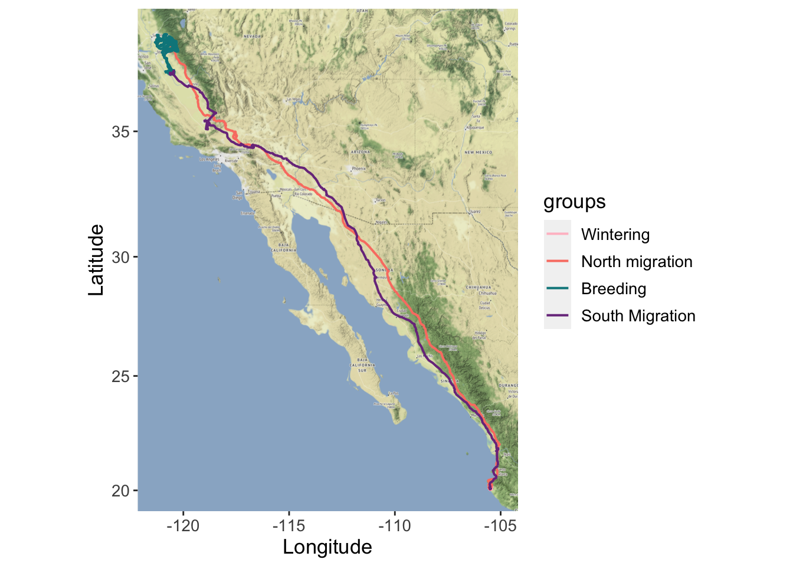</p>
</div>
</div>
</section>
</section>
<section id="working-with-altitude" class="level2">
<h2 class="anchored" data-anchor-id="working-with-altitude">Working With Altitude</h2>
<section id="mutate-data-to-fit-elevatr" class="level3">
<h3 class="anchored" data-anchor-id="mutate-data-to-fit-elevatr">Mutate Data to Fit Elevatr</h3>
<ul>
<li><p>The <em>elevatr</em> package needs to have the “lon” and “lat” in the front of the data set.</p></li>
<li><p>The <em>geosphere</em> package needs the to have only “lon” and “lat” in the data set.</p></li>
</ul>
<div class="cell">
<div class="sourceCode cell-code" id="cb60"><pre class="sourceCode r code-with-copy"><code class="sourceCode r"><span id="cb60-1"><a href="#cb60-1" aria-hidden="true" tabindex="-1"></a><span class="co">#upload package</span></span>
<span id="cb60-2"><a href="#cb60-2" aria-hidden="true" tabindex="-1"></a><span class="fu">library</span>(elevatr)</span>
<span id="cb60-3"><a href="#cb60-3" aria-hidden="true" tabindex="-1"></a><span class="co">#rearange data set to make readable for elevator function</span></span>
<span id="cb60-4"><a href="#cb60-4" aria-hidden="true" tabindex="-1"></a>dat_tuvu_relocate<span class="ot">&lt;-</span>tuvu_7783_22 <span class="sc">|&gt;</span> </span>
<span id="cb60-5"><a href="#cb60-5" aria-hidden="true" tabindex="-1"></a>  <span class="fu">relocate</span>(lon, <span class="at">.before=</span>id) <span class="sc">|&gt;</span> </span>
<span id="cb60-6"><a href="#cb60-6" aria-hidden="true" tabindex="-1"></a>  <span class="fu">relocate</span>(lat, <span class="at">.before=</span>id) <span class="sc">|&gt;</span> </span>
<span id="cb60-7"><a href="#cb60-7" aria-hidden="true" tabindex="-1"></a>  <span class="fu">relocate</span>(DateTime, <span class="at">.before=</span>id) <span class="sc">|&gt;</span> </span>
<span id="cb60-8"><a href="#cb60-8" aria-hidden="true" tabindex="-1"></a>  <span class="fu">relocate</span>(DateTime, <span class="at">.before=</span>id) <span class="sc">|&gt;</span> </span>
<span id="cb60-9"><a href="#cb60-9" aria-hidden="true" tabindex="-1"></a>  <span class="fu">drop_na</span>(lat)</span>
<span id="cb60-10"><a href="#cb60-10" aria-hidden="true" tabindex="-1"></a></span>
<span id="cb60-11"><a href="#cb60-11" aria-hidden="true" tabindex="-1"></a><span class="co">#convert into Data.frame</span></span>
<span id="cb60-12"><a href="#cb60-12" aria-hidden="true" tabindex="-1"></a>dat_tuvu_relocate_df <span class="ot">&lt;-</span> <span class="fu">data.frame</span>(dat_tuvu_relocate)</span></code><button title="Copy to Clipboard" class="code-copy-button"><i class="bi"></i></button></pre></div>
</div>
</section>
<section id="download-elevatr-data" class="level3">
<h3 class="anchored" data-anchor-id="download-elevatr-data">Download elevatr data</h3>
<ul>
<li>elevatr will extract topographic data from AWS and create a raster. It then takes that raster and extracts the elevation of the land when given a specific coordinate.</li>
</ul>
<div class="cell">
<div class="sourceCode cell-code" id="cb61"><pre class="sourceCode r code-with-copy"><code class="sourceCode r"><span id="cb61-1"><a href="#cb61-1" aria-hidden="true" tabindex="-1"></a><span class="co">#get elevation points from coordinates</span></span>
<span id="cb61-2"><a href="#cb61-2" aria-hidden="true" tabindex="-1"></a>dat_tuvu_with_ellip<span class="ot">&lt;-</span> <span class="fu">get_elev_point</span>(dat_tuvu_relocate_df, </span>
<span id="cb61-3"><a href="#cb61-3" aria-hidden="true" tabindex="-1"></a>                                     <span class="at">prj =</span> <span class="st">"+proj=longlat +datum=WGS84 +no_defs"</span>, </span>
<span id="cb61-4"><a href="#cb61-4" aria-hidden="true" tabindex="-1"></a>                                     <span class="at">src =</span> <span class="st">"aws"</span>, </span>
<span id="cb61-5"><a href="#cb61-5" aria-hidden="true" tabindex="-1"></a>                                     <span class="at">z=</span><span class="dv">5</span>)</span></code><button title="Copy to Clipboard" class="code-copy-button"><i class="bi"></i></button></pre></div>
<div class="cell-output cell-output-stderr">
<pre><code>Mosaicing &amp; Projecting</code></pre>
</div>
<div class="cell-output cell-output-stderr">
<pre><code>Note: Elevation units are in meters</code></pre>
</div>
<div class="sourceCode cell-code" id="cb64"><pre class="sourceCode r code-with-copy"><code class="sourceCode r"><span id="cb64-1"><a href="#cb64-1" aria-hidden="true" tabindex="-1"></a><span class="co">#create all outputs available</span></span>
<span id="cb64-2"><a href="#cb64-2" aria-hidden="true" tabindex="-1"></a><span class="fu">options</span>(<span class="at">max.print =</span> <span class="dv">1000000</span>)</span>
<span id="cb64-3"><a href="#cb64-3" aria-hidden="true" tabindex="-1"></a></span>
<span id="cb64-4"><a href="#cb64-4" aria-hidden="true" tabindex="-1"></a><span class="fu">glimpse</span>(dat_tuvu_with_ellip)</span></code><button title="Copy to Clipboard" class="code-copy-button"><i class="bi"></i></button></pre></div>
<div class="cell-output cell-output-stdout">
<pre><code>Formal class 'SpatialPointsDataFrame' [package "sp"] with 5 slots
  ..@ data       :'data.frame': 24386 obs. of  28 variables:
  .. ..$ DateTime           : POSIXct[1:24386], format: "2022-01-01 12:31:04" "2022-01-01 13:30:56" ...
  .. ..$ id                 : num [1:24386] 8.95e+19 8.95e+19 8.95e+19 8.95e+19 8.95e+19 ...
  .. ..$ GPS_date_YYYY.MM.DD: chr [1:24386] "2022-01-01" "2022-01-01" "2022-01-01" "2022-01-01" ...
  .. ..$ GPS_utc_HH.MM.SS   : chr [1:24386] "12:31:04" "13:30:56" "14:01:53" "15:01:58" ...
  .. ..$ hdop               : num [1:24386] 1.6 1.18 2.6 2.25 0.89 0.88 0.93 0.96 0.92 0.93 ...
  .. ..$ qi                 : num [1:24386] 3 3 3 3 3 3 3 3 3 3 ...
  .. ..$ cog                : int [1:24386] 0 0 0 0 0 246 152 45 196 11 ...
  .. ..$ speed              : num [1:24386] 0.02 0.1 0.14 0.07 0.03 ...
  .. ..$ alt                : num [1:24386] 139 132 70 100 111 137 128 240 173 201 ...
  .. ..$ data_voltage       : num [1:24386] 4.17 4.16 4.16 4.16 4.16 4.16 4.16 4.16 4.16 4.16 ...
  .. ..$ solar_charge       : num [1:24386] 0.03 2.27 4.97 4.95 4.93 5.62 5.58 4.81 5.83 5.96 ...
  .. ..$ solar_current      : num [1:24386] 0 0 0 1 2 16 12 0 22 31 ...
  .. ..$ nsats              : int [1:24386] 6 6 5 4 9 9 8 9 8 9 ...
  .. ..$ vdop               : num [1:24386] 3.53 1.96 6.44 5 1.66 1.69 1.7 1.73 1.79 1.79 ...
  .. ..$ activity           : int [1:24386] 0 0 56 73 43 59 25 4 0 0 ...
  .. ..$ temperature        : num [1:24386] 29 26 23 29 33 33 32 30 28 28 ...
  .. ..$ time_to_fix        : int [1:24386] 49 13 16 17 41 11 7 5 5 5 ...
  .. ..$ pTime              : num [1:24386] 10.828 0.998 0.516 1.001 1.008 ...
  .. ..$ sTime              : num [1:24386] 0.9978 0.5158 1.0014 1.0081 0.0706 ...
  .. ..$ pDist              : num [1:24386] 0.0024 0.00974 0.05904 0.06594 0.01172 ...
  .. ..$ sDist              : num [1:24386] 0.00974 0.05904 0.06594 0.01172 0.14195 ...
  .. ..$ pSpeed             : num [1:24386] 0.000222 0.009762 0.114453 0.06585 0.01163 ...
  .. ..$ sSpeed             : num [1:24386] 0.00976 0.11445 0.06585 0.01163 2.01188 ...
  .. ..$ inAng              : num [1:24386] 65.96 94.67 109.79 59.17 5.09 ...
  .. ..$ julian             : num [1:24386] 1 1 1 1 1 1 1 1 1 1 ...
  .. ..$ groups             : Factor w/ 4 levels "Wintering","North migration",..: 1 1 1 1 1 1 1 1 1 1 ...
  .. ..$ elevation          : num [1:24386] 118 118 118 118 118 118 118 118 111 86 ...
  .. ..$ elev_units         : chr [1:24386] "meters" "meters" "meters" "meters" ...
  ..@ coords.nrs : num(0) 
  ..@ coords     : num [1:24386, 1:2] -106 -106 -106 -106 -106 ...
  .. ..- attr(*, "dimnames")=List of 2
  ..@ bbox       : num [1:2, 1:2] -121.3 20 -105 38.7
  .. ..- attr(*, "dimnames")=List of 2
  ..@ proj4string:Formal class 'CRS' [package "sp"] with 1 slot</code></pre>
</div>
</div>
</section>
<section id="calculate-elevation-above-ground-level" class="level3">
<h3 class="anchored" data-anchor-id="calculate-elevation-above-ground-level">Calculate Elevation above Ground Level</h3>
<ul>
<li>Subtract the elevation of the land from the altitude to obtain the elevation above ground level.</li>
</ul>
<div class="cell">
<div class="sourceCode cell-code" id="cb66"><pre class="sourceCode r code-with-copy"><code class="sourceCode r"><span id="cb66-1"><a href="#cb66-1" aria-hidden="true" tabindex="-1"></a><span class="co">#converting ellipsoidal heights to orthometric heights</span></span>
<span id="cb66-2"><a href="#cb66-2" aria-hidden="true" tabindex="-1"></a>dat_tuvu_with_ellip<span class="sc">$</span>eagl<span class="ot">&lt;-</span>dat_tuvu_with_ellip<span class="sc">$</span>alt<span class="sc">-</span>dat_tuvu_with_ellip<span class="sc">$</span>elevation</span>
<span id="cb66-3"><a href="#cb66-3" aria-hidden="true" tabindex="-1"></a></span>
<span id="cb66-4"><a href="#cb66-4" aria-hidden="true" tabindex="-1"></a><span class="co">#convert spacial data frame into normal data frame</span></span>
<span id="cb66-5"><a href="#cb66-5" aria-hidden="true" tabindex="-1"></a>dat_tuvu_with_eagl<span class="ot">&lt;-</span> <span class="fu">as.data.frame</span>(dat_tuvu_with_ellip)</span>
<span id="cb66-6"><a href="#cb66-6" aria-hidden="true" tabindex="-1"></a></span>
<span id="cb66-7"><a href="#cb66-7" aria-hidden="true" tabindex="-1"></a><span class="fu">glimpse</span>(dat_tuvu_with_eagl)</span></code><button title="Copy to Clipboard" class="code-copy-button"><i class="bi"></i></button></pre></div>
<div class="cell-output cell-output-stdout">
<pre><code>Rows: 24,386
Columns: 31
$ DateTime            &lt;dttm&gt; 2022-01-01 12:31:04, 2022-01-01 13:30:56, 2022-01…
$ id                  &lt;dbl&gt; 8.94608e+19, 8.94608e+19, 8.94608e+19, 8.94608e+19…
$ GPS_date_YYYY.MM.DD &lt;chr&gt; "2022-01-01", "2022-01-01", "2022-01-01", "2022-01…
$ GPS_utc_HH.MM.SS    &lt;chr&gt; "12:31:04", "13:30:56", "14:01:53", "15:01:58", "1…
$ hdop                &lt;dbl&gt; 1.60, 1.18, 2.60, 2.25, 0.89, 0.88, 0.93, 0.96, 0.…
$ qi                  &lt;dbl&gt; 3, 3, 3, 3, 3, 3, 3, 3, 3, 3, 3, 3, 3, 3, 3, 3, 3,…
$ cog                 &lt;int&gt; 0, 0, 0, 0, 0, 246, 152, 45, 196, 11, 179, 15, 198…
$ speed               &lt;dbl&gt; 0.02, 0.10, 0.14, 0.07, 0.03, 11.15, 14.32, 18.21,…
$ alt                 &lt;dbl&gt; 139, 132, 70, 100, 111, 137, 128, 240, 173, 201, 1…
$ data_voltage        &lt;dbl&gt; 4.17, 4.16, 4.16, 4.16, 4.16, 4.16, 4.16, 4.16, 4.…
$ solar_charge        &lt;dbl&gt; 0.03, 2.27, 4.97, 4.95, 4.93, 5.62, 5.58, 4.81, 5.…
$ solar_current       &lt;dbl&gt; 0, 0, 0, 1, 2, 16, 12, 0, 22, 31, 26, 29, 24, 16, …
$ nsats               &lt;int&gt; 6, 6, 5, 4, 9, 9, 8, 9, 8, 9, 9, 9, 9, 9, 7, 9, 7,…
$ vdop                &lt;dbl&gt; 3.53, 1.96, 6.44, 5.00, 1.66, 1.69, 1.70, 1.73, 1.…
$ activity            &lt;int&gt; 0, 0, 56, 73, 43, 59, 25, 4, 0, 0, 0, 0, 0, 0, 106…
$ temperature         &lt;dbl&gt; 29, 26, 23, 29, 33, 33, 32, 30, 28, 28, 27, 27, 27…
$ time_to_fix         &lt;int&gt; 49, 13, 16, 17, 41, 11, 7, 5, 5, 5, 5, 5, 6, 5, 6,…
$ pTime               &lt;dbl&gt; 10.82833333, 0.99777778, 0.51583333, 1.00138889, 1…
$ sTime               &lt;dbl&gt; 0.99777778, 0.51583333, 1.00138889, 1.00805556, 0.…
$ pDist               &lt;dbl&gt; 0.002401264, 0.009740193, 0.059038624, 0.065941633…
$ sDist               &lt;dbl&gt; 0.009740193, 0.059038624, 0.065941633, 0.011724095…
$ pSpeed              &lt;dbl&gt; 2.217575e-04, 9.761886e-03, 1.144529e-01, 6.585017…
$ sSpeed              &lt;dbl&gt; 0.009761886, 0.114452905, 0.065850174, 0.011630406…
$ inAng               &lt;dbl&gt; 65.963850, 94.667188, 109.790366, 59.174138, 5.089…
$ julian              &lt;dbl&gt; 1, 1, 1, 1, 1, 1, 1, 1, 1, 1, 1, 1, 1, 1, 1, 1, 1,…
$ groups              &lt;fct&gt; Wintering, Wintering, Wintering, Wintering, Winter…
$ elevation           &lt;dbl&gt; 118, 118, 118, 118, 118, 118, 118, 118, 111, 86, 8…
$ elev_units          &lt;chr&gt; "meters", "meters", "meters", "meters", "meters", …
$ eagl                &lt;dbl&gt; 21, 14, -48, -18, -7, 19, 10, 122, 62, 115, 75, 17…
$ coords.x1           &lt;dbl&gt; -105.5184, -105.5183, -105.5188, -105.5193, -105.5…
$ coords.x2           &lt;dbl&gt; 20.12981, 20.12973, 20.12947, 20.12987, 20.12990, …</code></pre>
</div>
</div>
</section>
<section id="apply-filters" class="level3">
<h3 class="anchored" data-anchor-id="apply-filters">Apply Filters</h3>
<ul>
<li><p>hdop is the horizontal dilution of precision, and vdop is vertical dilution of precision</p>
<ul>
<li><p>This tells us how accurate the data collected was based off the position and precision of satellites.</p></li>
<li><p>Acceptable values are anything below 3.</p></li>
</ul></li>
<li><p>Time to fix indicates the ammount of time taken to acquire a satellite signal, navigate, and calculate data.</p></li>
<li><p>To visualize negative points filter out any altitude greater than 0.1 (only do to visualize negative do not include in final graph.</p></li>
</ul>
<div class="cell">
<div class="sourceCode cell-code" id="cb68"><pre class="sourceCode r code-with-copy"><code class="sourceCode r"><span id="cb68-1"><a href="#cb68-1" aria-hidden="true" tabindex="-1"></a><span class="co">#filter data with HDOP greater than 5</span></span>
<span id="cb68-2"><a href="#cb68-2" aria-hidden="true" tabindex="-1"></a>dat_tuvu_with_eagl_f <span class="ot">&lt;-</span> <span class="fu">filter</span>(dat_tuvu_with_eagl, hdop<span class="sc">&lt;</span><span class="dv">5</span>)</span>
<span id="cb68-3"><a href="#cb68-3" aria-hidden="true" tabindex="-1"></a></span>
<span id="cb68-4"><a href="#cb68-4" aria-hidden="true" tabindex="-1"></a><span class="co">#filter data with vDOP greater than 5</span></span>
<span id="cb68-5"><a href="#cb68-5" aria-hidden="true" tabindex="-1"></a>dat_tuvu_with_eagl_f<span class="ot">&lt;-</span> <span class="fu">filter</span>(dat_tuvu_with_eagl_f, vdop<span class="sc">&lt;</span><span class="dv">5</span>)</span>
<span id="cb68-6"><a href="#cb68-6" aria-hidden="true" tabindex="-1"></a></span>
<span id="cb68-7"><a href="#cb68-7" aria-hidden="true" tabindex="-1"></a><span class="fu">glimpse</span>(dat_tuvu_with_eagl_f)</span></code><button title="Copy to Clipboard" class="code-copy-button"><i class="bi"></i></button></pre></div>
<div class="cell-output cell-output-stdout">
<pre><code>Rows: 23,969
Columns: 31
$ DateTime            &lt;dttm&gt; 2022-01-01 12:31:04, 2022-01-01 13:30:56, 2022-01…
$ id                  &lt;dbl&gt; 8.94608e+19, 8.94608e+19, 8.94608e+19, 8.94608e+19…
$ GPS_date_YYYY.MM.DD &lt;chr&gt; "2022-01-01", "2022-01-01", "2022-01-01", "2022-01…
$ GPS_utc_HH.MM.SS    &lt;chr&gt; "12:31:04", "13:30:56", "16:02:27", "16:06:41", "1…
$ hdop                &lt;dbl&gt; 1.60, 1.18, 0.89, 0.88, 0.93, 0.96, 0.92, 0.93, 0.…
$ qi                  &lt;dbl&gt; 3, 3, 3, 3, 3, 3, 3, 3, 3, 3, 3, 3, 3, 3, 3, 3, 3,…
$ cog                 &lt;int&gt; 0, 0, 0, 246, 152, 45, 196, 11, 179, 15, 198, 346,…
$ speed               &lt;dbl&gt; 0.02, 0.10, 0.03, 11.15, 14.32, 18.21, 14.13, 20.9…
$ alt                 &lt;dbl&gt; 139, 132, 111, 137, 128, 240, 173, 201, 161, 182, …
$ data_voltage        &lt;dbl&gt; 4.17, 4.16, 4.16, 4.16, 4.16, 4.16, 4.16, 4.16, 4.…
$ solar_charge        &lt;dbl&gt; 0.03, 2.27, 4.93, 5.62, 5.58, 4.81, 5.83, 5.96, 5.…
$ solar_current       &lt;dbl&gt; 0, 0, 2, 16, 12, 0, 22, 31, 26, 29, 24, 16, 7, 18,…
$ nsats               &lt;int&gt; 6, 6, 9, 9, 8, 9, 8, 9, 9, 9, 9, 9, 7, 9, 7, 8, 8,…
$ vdop                &lt;dbl&gt; 3.53, 1.96, 1.66, 1.69, 1.70, 1.73, 1.79, 1.79, 1.…
$ activity            &lt;int&gt; 0, 0, 43, 59, 25, 4, 0, 0, 0, 0, 0, 0, 106, 480, 3…
$ temperature         &lt;dbl&gt; 29, 26, 33, 33, 32, 30, 28, 28, 27, 27, 27, 26, 28…
$ time_to_fix         &lt;int&gt; 49, 13, 41, 11, 7, 5, 5, 5, 5, 5, 6, 5, 6, 5, 8, 9…
$ pTime               &lt;dbl&gt; 10.82833333, 0.99777778, 1.00805556, 0.07055556, 0…
$ sTime               &lt;dbl&gt; 0.99777778, 0.51583333, 0.07055556, 0.01083333, 0.…
$ pDist               &lt;dbl&gt; 0.002401264, 0.009740193, 0.011724095, 0.141949294…
$ sDist               &lt;dbl&gt; 0.009740193, 0.059038624, 0.141949294, 0.151631888…
$ pSpeed              &lt;dbl&gt; 2.217575e-04, 9.761886e-03, 1.163041e-02, 2.011880…
$ sSpeed              &lt;dbl&gt; 0.009761886, 0.114452905, 2.011879751, 13.99678964…
$ inAng               &lt;dbl&gt; 65.963850, 94.667188, 5.089779, 177.749387, 37.696…
$ julian              &lt;dbl&gt; 1, 1, 1, 1, 1, 1, 1, 1, 1, 1, 1, 1, 1, 1, 1, 1, 1,…
$ groups              &lt;fct&gt; Wintering, Wintering, Wintering, Wintering, Winter…
$ elevation           &lt;dbl&gt; 118, 118, 118, 118, 118, 118, 111, 86, 86, 7, 53, …
$ elev_units          &lt;chr&gt; "meters", "meters", "meters", "meters", "meters", …
$ eagl                &lt;dbl&gt; 21, 14, -7, 19, 10, 122, 62, 115, 75, 175, 367, 82…
$ coords.x1           &lt;dbl&gt; -105.5184, -105.5183, -105.5192, -105.5205, -105.5…
$ coords.x2           &lt;dbl&gt; 20.12981, 20.12973, 20.12990, 20.12962, 20.12927, …</code></pre>
</div>
<div class="sourceCode cell-code" id="cb70"><pre class="sourceCode r code-with-copy"><code class="sourceCode r"><span id="cb70-1"><a href="#cb70-1" aria-hidden="true" tabindex="-1"></a><span class="co">#filter out time to fix less greater than 60</span></span>
<span id="cb70-2"><a href="#cb70-2" aria-hidden="true" tabindex="-1"></a>dat_tuvu_with_eagl_f<span class="ot">&lt;-</span> <span class="fu">filter</span>(dat_tuvu_with_eagl_f, time_to_fix<span class="sc">&lt;</span><span class="dv">60</span>)</span>
<span id="cb70-3"><a href="#cb70-3" aria-hidden="true" tabindex="-1"></a></span>
<span id="cb70-4"><a href="#cb70-4" aria-hidden="true" tabindex="-1"></a><span class="fu">glimpse</span>(dat_tuvu_with_eagl_f)</span></code><button title="Copy to Clipboard" class="code-copy-button"><i class="bi"></i></button></pre></div>
<div class="cell-output cell-output-stdout">
<pre><code>Rows: 23,854
Columns: 31
$ DateTime            &lt;dttm&gt; 2022-01-01 12:31:04, 2022-01-01 13:30:56, 2022-01…
$ id                  &lt;dbl&gt; 8.94608e+19, 8.94608e+19, 8.94608e+19, 8.94608e+19…
$ GPS_date_YYYY.MM.DD &lt;chr&gt; "2022-01-01", "2022-01-01", "2022-01-01", "2022-01…
$ GPS_utc_HH.MM.SS    &lt;chr&gt; "12:31:04", "13:30:56", "16:02:27", "16:06:41", "1…
$ hdop                &lt;dbl&gt; 1.60, 1.18, 0.89, 0.88, 0.93, 0.96, 0.92, 0.93, 0.…
$ qi                  &lt;dbl&gt; 3, 3, 3, 3, 3, 3, 3, 3, 3, 3, 3, 3, 3, 3, 3, 3, 3,…
$ cog                 &lt;int&gt; 0, 0, 0, 246, 152, 45, 196, 11, 179, 15, 198, 346,…
$ speed               &lt;dbl&gt; 0.02, 0.10, 0.03, 11.15, 14.32, 18.21, 14.13, 20.9…
$ alt                 &lt;dbl&gt; 139, 132, 111, 137, 128, 240, 173, 201, 161, 182, …
$ data_voltage        &lt;dbl&gt; 4.17, 4.16, 4.16, 4.16, 4.16, 4.16, 4.16, 4.16, 4.…
$ solar_charge        &lt;dbl&gt; 0.03, 2.27, 4.93, 5.62, 5.58, 4.81, 5.83, 5.96, 5.…
$ solar_current       &lt;dbl&gt; 0, 0, 2, 16, 12, 0, 22, 31, 26, 29, 24, 16, 7, 18,…
$ nsats               &lt;int&gt; 6, 6, 9, 9, 8, 9, 8, 9, 9, 9, 9, 9, 7, 9, 7, 8, 8,…
$ vdop                &lt;dbl&gt; 3.53, 1.96, 1.66, 1.69, 1.70, 1.73, 1.79, 1.79, 1.…
$ activity            &lt;int&gt; 0, 0, 43, 59, 25, 4, 0, 0, 0, 0, 0, 0, 106, 480, 3…
$ temperature         &lt;dbl&gt; 29, 26, 33, 33, 32, 30, 28, 28, 27, 27, 27, 26, 28…
$ time_to_fix         &lt;int&gt; 49, 13, 41, 11, 7, 5, 5, 5, 5, 5, 6, 5, 6, 5, 8, 9…
$ pTime               &lt;dbl&gt; 10.82833333, 0.99777778, 1.00805556, 0.07055556, 0…
$ sTime               &lt;dbl&gt; 0.99777778, 0.51583333, 0.07055556, 0.01083333, 0.…
$ pDist               &lt;dbl&gt; 0.002401264, 0.009740193, 0.011724095, 0.141949294…
$ sDist               &lt;dbl&gt; 0.009740193, 0.059038624, 0.141949294, 0.151631888…
$ pSpeed              &lt;dbl&gt; 2.217575e-04, 9.761886e-03, 1.163041e-02, 2.011880…
$ sSpeed              &lt;dbl&gt; 0.009761886, 0.114452905, 2.011879751, 13.99678964…
$ inAng               &lt;dbl&gt; 65.963850, 94.667188, 5.089779, 177.749387, 37.696…
$ julian              &lt;dbl&gt; 1, 1, 1, 1, 1, 1, 1, 1, 1, 1, 1, 1, 1, 1, 1, 1, 1,…
$ groups              &lt;fct&gt; Wintering, Wintering, Wintering, Wintering, Winter…
$ elevation           &lt;dbl&gt; 118, 118, 118, 118, 118, 118, 111, 86, 86, 7, 53, …
$ elev_units          &lt;chr&gt; "meters", "meters", "meters", "meters", "meters", …
$ eagl                &lt;dbl&gt; 21, 14, -7, 19, 10, 122, 62, 115, 75, 175, 367, 82…
$ coords.x1           &lt;dbl&gt; -105.5184, -105.5183, -105.5192, -105.5205, -105.5…
$ coords.x2           &lt;dbl&gt; 20.12981, 20.12973, 20.12990, 20.12962, 20.12927, …</code></pre>
</div>
<div class="sourceCode cell-code" id="cb72"><pre class="sourceCode r code-with-copy"><code class="sourceCode r"><span id="cb72-1"><a href="#cb72-1" aria-hidden="true" tabindex="-1"></a><span class="co">#remove negative points</span></span>
<span id="cb72-2"><a href="#cb72-2" aria-hidden="true" tabindex="-1"></a>dat_tuvu_with_eagl_fp<span class="ot">&lt;-</span> <span class="fu">filter</span>(dat_tuvu_with_eagl_f, eagl<span class="sc">&gt;</span>(<span class="sc">-</span><span class="fl">0.1</span>))</span>
<span id="cb72-3"><a href="#cb72-3" aria-hidden="true" tabindex="-1"></a><span class="co">#filter out on the ground</span></span>
<span id="cb72-4"><a href="#cb72-4" aria-hidden="true" tabindex="-1"></a>dat_tuvu_with_eagl_fs<span class="ot">&lt;-</span> <span class="fu">filter</span>(dat_tuvu_with_eagl_f, speed<span class="sc">&gt;</span><span class="dv">1</span>)</span>
<span id="cb72-5"><a href="#cb72-5" aria-hidden="true" tabindex="-1"></a></span>
<span id="cb72-6"><a href="#cb72-6" aria-hidden="true" tabindex="-1"></a><span class="co">#filter out negative points</span></span>
<span id="cb72-7"><a href="#cb72-7" aria-hidden="true" tabindex="-1"></a>dat_tuvu_with_eagl_fn<span class="ot">&lt;-</span> <span class="fu">filter</span>(dat_tuvu_with_eagl_f, eagl<span class="sc">&lt;</span>(<span class="dv">0</span>))</span>
<span id="cb72-8"><a href="#cb72-8" aria-hidden="true" tabindex="-1"></a>dat_tuvu_with_eagl_fsn<span class="ot">&lt;-</span> <span class="fu">filter</span>(dat_tuvu_with_eagl_fs, eagl<span class="sc">&lt;</span>(<span class="dv">0</span>))</span>
<span id="cb72-9"><a href="#cb72-9" aria-hidden="true" tabindex="-1"></a></span>
<span id="cb72-10"><a href="#cb72-10" aria-hidden="true" tabindex="-1"></a></span>
<span id="cb72-11"><a href="#cb72-11" aria-hidden="true" tabindex="-1"></a><span class="fu">glimpse</span>(dat_tuvu_with_eagl_f)</span></code><button title="Copy to Clipboard" class="code-copy-button"><i class="bi"></i></button></pre></div>
<div class="cell-output cell-output-stdout">
<pre><code>Rows: 23,854
Columns: 31
$ DateTime            &lt;dttm&gt; 2022-01-01 12:31:04, 2022-01-01 13:30:56, 2022-01…
$ id                  &lt;dbl&gt; 8.94608e+19, 8.94608e+19, 8.94608e+19, 8.94608e+19…
$ GPS_date_YYYY.MM.DD &lt;chr&gt; "2022-01-01", "2022-01-01", "2022-01-01", "2022-01…
$ GPS_utc_HH.MM.SS    &lt;chr&gt; "12:31:04", "13:30:56", "16:02:27", "16:06:41", "1…
$ hdop                &lt;dbl&gt; 1.60, 1.18, 0.89, 0.88, 0.93, 0.96, 0.92, 0.93, 0.…
$ qi                  &lt;dbl&gt; 3, 3, 3, 3, 3, 3, 3, 3, 3, 3, 3, 3, 3, 3, 3, 3, 3,…
$ cog                 &lt;int&gt; 0, 0, 0, 246, 152, 45, 196, 11, 179, 15, 198, 346,…
$ speed               &lt;dbl&gt; 0.02, 0.10, 0.03, 11.15, 14.32, 18.21, 14.13, 20.9…
$ alt                 &lt;dbl&gt; 139, 132, 111, 137, 128, 240, 173, 201, 161, 182, …
$ data_voltage        &lt;dbl&gt; 4.17, 4.16, 4.16, 4.16, 4.16, 4.16, 4.16, 4.16, 4.…
$ solar_charge        &lt;dbl&gt; 0.03, 2.27, 4.93, 5.62, 5.58, 4.81, 5.83, 5.96, 5.…
$ solar_current       &lt;dbl&gt; 0, 0, 2, 16, 12, 0, 22, 31, 26, 29, 24, 16, 7, 18,…
$ nsats               &lt;int&gt; 6, 6, 9, 9, 8, 9, 8, 9, 9, 9, 9, 9, 7, 9, 7, 8, 8,…
$ vdop                &lt;dbl&gt; 3.53, 1.96, 1.66, 1.69, 1.70, 1.73, 1.79, 1.79, 1.…
$ activity            &lt;int&gt; 0, 0, 43, 59, 25, 4, 0, 0, 0, 0, 0, 0, 106, 480, 3…
$ temperature         &lt;dbl&gt; 29, 26, 33, 33, 32, 30, 28, 28, 27, 27, 27, 26, 28…
$ time_to_fix         &lt;int&gt; 49, 13, 41, 11, 7, 5, 5, 5, 5, 5, 6, 5, 6, 5, 8, 9…
$ pTime               &lt;dbl&gt; 10.82833333, 0.99777778, 1.00805556, 0.07055556, 0…
$ sTime               &lt;dbl&gt; 0.99777778, 0.51583333, 0.07055556, 0.01083333, 0.…
$ pDist               &lt;dbl&gt; 0.002401264, 0.009740193, 0.011724095, 0.141949294…
$ sDist               &lt;dbl&gt; 0.009740193, 0.059038624, 0.141949294, 0.151631888…
$ pSpeed              &lt;dbl&gt; 2.217575e-04, 9.761886e-03, 1.163041e-02, 2.011880…
$ sSpeed              &lt;dbl&gt; 0.009761886, 0.114452905, 2.011879751, 13.99678964…
$ inAng               &lt;dbl&gt; 65.963850, 94.667188, 5.089779, 177.749387, 37.696…
$ julian              &lt;dbl&gt; 1, 1, 1, 1, 1, 1, 1, 1, 1, 1, 1, 1, 1, 1, 1, 1, 1,…
$ groups              &lt;fct&gt; Wintering, Wintering, Wintering, Wintering, Winter…
$ elevation           &lt;dbl&gt; 118, 118, 118, 118, 118, 118, 111, 86, 86, 7, 53, …
$ elev_units          &lt;chr&gt; "meters", "meters", "meters", "meters", "meters", …
$ eagl                &lt;dbl&gt; 21, 14, -7, 19, 10, 122, 62, 115, 75, 175, 367, 82…
$ coords.x1           &lt;dbl&gt; -105.5184, -105.5183, -105.5192, -105.5205, -105.5…
$ coords.x2           &lt;dbl&gt; 20.12981, 20.12973, 20.12990, 20.12962, 20.12927, …</code></pre>
</div>
</div>
</section>
<section id="create-ggplot-visuals" class="level3">
<h3 class="anchored" data-anchor-id="create-ggplot-visuals">Create ggplot Visuals</h3>
<div class="cell">
<div class="sourceCode cell-code" id="cb74"><pre class="sourceCode r code-with-copy"><code class="sourceCode r"><span id="cb74-1"><a href="#cb74-1" aria-hidden="true" tabindex="-1"></a><span class="fu">library</span>(patchwork)</span></code><button title="Copy to Clipboard" class="code-copy-button"><i class="bi"></i></button></pre></div>
<div class="cell-output cell-output-stderr">
<pre><code>
Attaching package: 'patchwork'</code></pre>
</div>
<div class="cell-output cell-output-stderr">
<pre><code>The following object is masked from 'package:MASS':

    area</code></pre>
</div>
<div class="cell-output cell-output-stderr">
<pre><code>The following object is masked from 'package:raster':

    area</code></pre>
</div>
<div class="sourceCode cell-code" id="cb78"><pre class="sourceCode r code-with-copy"><code class="sourceCode r"><span id="cb78-1"><a href="#cb78-1" aria-hidden="true" tabindex="-1"></a><span class="co">#histogram of all values</span></span>
<span id="cb78-2"><a href="#cb78-2" aria-hidden="true" tabindex="-1"></a>p3<span class="ot">&lt;-</span><span class="fu">ggplot</span>(dat_tuvu_with_eagl_f, </span>
<span id="cb78-3"><a href="#cb78-3" aria-hidden="true" tabindex="-1"></a>           <span class="fu">aes</span>(<span class="at">x =</span> eagl)) <span class="sc">+</span></span>
<span id="cb78-4"><a href="#cb78-4" aria-hidden="true" tabindex="-1"></a>  <span class="fu">geom_histogram</span>(<span class="at">fill=</span><span class="st">"black"</span>,</span>
<span id="cb78-5"><a href="#cb78-5" aria-hidden="true" tabindex="-1"></a>                 <span class="at">binwidth =</span> <span class="dv">100</span>, </span>
<span id="cb78-6"><a href="#cb78-6" aria-hidden="true" tabindex="-1"></a>                 <span class="at">size=</span><span class="dv">1</span>) <span class="sc">+</span></span>
<span id="cb78-7"><a href="#cb78-7" aria-hidden="true" tabindex="-1"></a>  <span class="fu">ggtitle</span>(<span class="st">"TUVU EAGL (100m binwidth)"</span>)<span class="sc">+</span></span>
<span id="cb78-8"><a href="#cb78-8" aria-hidden="true" tabindex="-1"></a>  <span class="fu">labs</span>( <span class="at">x=</span><span class="st">"Elevation Above Ground Level (m)"</span>)<span class="sc">+</span></span>
<span id="cb78-9"><a href="#cb78-9" aria-hidden="true" tabindex="-1"></a>  <span class="fu">theme</span>(<span class="at">text =</span> <span class="fu">element_text</span>(<span class="at">size =</span><span class="dv">18</span>))</span>
<span id="cb78-10"><a href="#cb78-10" aria-hidden="true" tabindex="-1"></a></span>
<span id="cb78-11"><a href="#cb78-11" aria-hidden="true" tabindex="-1"></a><span class="co">#histogram of negative values</span></span>
<span id="cb78-12"><a href="#cb78-12" aria-hidden="true" tabindex="-1"></a><span class="fu">ggplot</span>(dat_tuvu_with_eagl_fn, <span class="fu">aes</span>(<span class="at">x =</span> eagl)) <span class="sc">+</span></span>
<span id="cb78-13"><a href="#cb78-13" aria-hidden="true" tabindex="-1"></a>  <span class="fu">geom_histogram</span>(<span class="at">color=</span><span class="st">"red"</span>, </span>
<span id="cb78-14"><a href="#cb78-14" aria-hidden="true" tabindex="-1"></a>                 <span class="at">fill=</span><span class="st">"black"</span>,</span>
<span id="cb78-15"><a href="#cb78-15" aria-hidden="true" tabindex="-1"></a>                 <span class="at">binwidth =</span> <span class="dv">10</span>, </span>
<span id="cb78-16"><a href="#cb78-16" aria-hidden="true" tabindex="-1"></a>                 <span class="at">size=</span><span class="dv">1</span>) <span class="sc">+</span></span>
<span id="cb78-17"><a href="#cb78-17" aria-hidden="true" tabindex="-1"></a>  <span class="fu">ggtitle</span>(<span class="st">"TUVU EAGL negative points (10m binwidth)"</span>)<span class="sc">+</span></span>
<span id="cb78-18"><a href="#cb78-18" aria-hidden="true" tabindex="-1"></a>  <span class="fu">theme</span>(<span class="at">text =</span> <span class="fu">element_text</span>(<span class="at">size =</span><span class="dv">18</span>))</span></code><button title="Copy to Clipboard" class="code-copy-button"><i class="bi"></i></button></pre></div>
<div class="cell-output-display">
<p>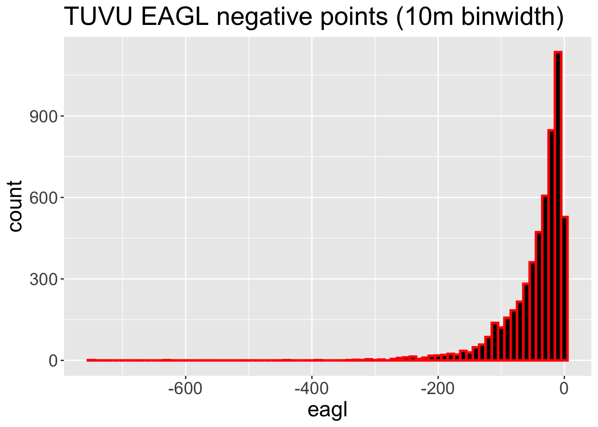</p>
</div>
<div class="sourceCode cell-code" id="cb79"><pre class="sourceCode r code-with-copy"><code class="sourceCode r"><span id="cb79-1"><a href="#cb79-1" aria-hidden="true" tabindex="-1"></a><span class="co">#histogram of when speed is filtered </span></span>
<span id="cb79-2"><a href="#cb79-2" aria-hidden="true" tabindex="-1"></a>p4<span class="ot">&lt;-</span><span class="fu">ggplot</span>(dat_tuvu_with_eagl_fs, </span>
<span id="cb79-3"><a href="#cb79-3" aria-hidden="true" tabindex="-1"></a>           <span class="fu">aes</span>(<span class="at">x =</span> eagl)) <span class="sc">+</span></span>
<span id="cb79-4"><a href="#cb79-4" aria-hidden="true" tabindex="-1"></a>  <span class="fu">geom_histogram</span>(<span class="at">fill=</span><span class="st">"black"</span>,</span>
<span id="cb79-5"><a href="#cb79-5" aria-hidden="true" tabindex="-1"></a>                 <span class="at">binwidth =</span> <span class="dv">100</span>,</span>
<span id="cb79-6"><a href="#cb79-6" aria-hidden="true" tabindex="-1"></a>                 <span class="at">size=</span><span class="dv">1</span>) <span class="sc">+</span></span>
<span id="cb79-7"><a href="#cb79-7" aria-hidden="true" tabindex="-1"></a>  <span class="fu">ggtitle</span>(<span class="st">"TUVU EAGL with Speed Greater than 1 (100m binwidth)"</span>)<span class="sc">+</span></span>
<span id="cb79-8"><a href="#cb79-8" aria-hidden="true" tabindex="-1"></a>  <span class="fu">labs</span>( <span class="at">x=</span><span class="st">"Elevation Above Ground Level (m)"</span>)<span class="sc">+</span></span>
<span id="cb79-9"><a href="#cb79-9" aria-hidden="true" tabindex="-1"></a>  <span class="fu">theme</span>(<span class="at">text =</span> <span class="fu">element_text</span>(<span class="at">size =</span><span class="dv">18</span>))</span>
<span id="cb79-10"><a href="#cb79-10" aria-hidden="true" tabindex="-1"></a></span>
<span id="cb79-11"><a href="#cb79-11" aria-hidden="true" tabindex="-1"></a><span class="co">#histogram of negative points when speed is filtered</span></span>
<span id="cb79-12"><a href="#cb79-12" aria-hidden="true" tabindex="-1"></a><span class="fu">ggplot</span>(dat_tuvu_with_eagl_fsn, </span>
<span id="cb79-13"><a href="#cb79-13" aria-hidden="true" tabindex="-1"></a>       <span class="fu">aes</span>(<span class="at">x =</span> eagl)) <span class="sc">+</span></span>
<span id="cb79-14"><a href="#cb79-14" aria-hidden="true" tabindex="-1"></a>  <span class="fu">geom_histogram</span>(<span class="at">color=</span><span class="st">"red"</span>, </span>
<span id="cb79-15"><a href="#cb79-15" aria-hidden="true" tabindex="-1"></a>                 <span class="at">fill=</span><span class="st">"black"</span>,</span>
<span id="cb79-16"><a href="#cb79-16" aria-hidden="true" tabindex="-1"></a>                 <span class="at">binwidth =</span> <span class="dv">10</span>, </span>
<span id="cb79-17"><a href="#cb79-17" aria-hidden="true" tabindex="-1"></a>                 <span class="at">size=</span><span class="dv">1</span>) <span class="sc">+</span></span>
<span id="cb79-18"><a href="#cb79-18" aria-hidden="true" tabindex="-1"></a>  <span class="fu">ggtitle</span>(<span class="st">"TUVU EAGL with Speed Greater than 1 negaitve points (10m binwidth)"</span>)<span class="sc">+</span></span>
<span id="cb79-19"><a href="#cb79-19" aria-hidden="true" tabindex="-1"></a>  <span class="fu">theme</span>(<span class="at">text =</span> <span class="fu">element_text</span>(<span class="at">size =</span><span class="dv">18</span>))</span></code><button title="Copy to Clipboard" class="code-copy-button"><i class="bi"></i></button></pre></div>
<div class="cell-output-display">
<p>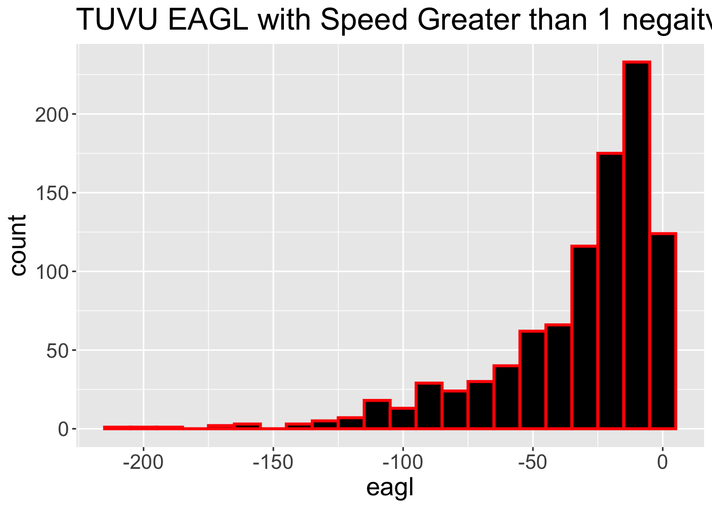</p>
</div>
<div class="sourceCode cell-code" id="cb80"><pre class="sourceCode r code-with-copy"><code class="sourceCode r"><span id="cb80-1"><a href="#cb80-1" aria-hidden="true" tabindex="-1"></a><span class="co">#use patchwork to combine them together</span></span>
<span id="cb80-2"><a href="#cb80-2" aria-hidden="true" tabindex="-1"></a>p3<span class="sc">/</span>p4</span></code><button title="Copy to Clipboard" class="code-copy-button"><i class="bi"></i></button></pre></div>
<div class="cell-output-display">
<p>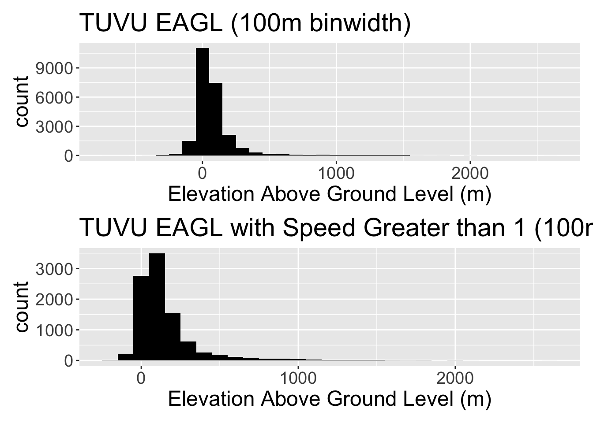</p>
</div>
<div class="sourceCode cell-code" id="cb81"><pre class="sourceCode r code-with-copy"><code class="sourceCode r"><span id="cb81-1"><a href="#cb81-1" aria-hidden="true" tabindex="-1"></a>dat_tuvu_with_eagl_fp<span class="sc">$</span>DateAndTime <span class="ot">&lt;-</span> <span class="fu">as.Date</span>(dat_tuvu_with_eagl_fp<span class="sc">$</span>DateTime, <span class="at">tz =</span> <span class="st">"UTC"</span>, <span class="at">origin =</span> <span class="st">'2021-03-29'</span>)</span>
<span id="cb81-2"><a href="#cb81-2" aria-hidden="true" tabindex="-1"></a></span>
<span id="cb81-3"><a href="#cb81-3" aria-hidden="true" tabindex="-1"></a><span class="co">#scatter plot of time vs altitude</span></span>
<span id="cb81-4"><a href="#cb81-4" aria-hidden="true" tabindex="-1"></a>p1<span class="ot">&lt;-</span><span class="fu">ggplot</span>(dat_tuvu_with_eagl_fp, </span>
<span id="cb81-5"><a href="#cb81-5" aria-hidden="true" tabindex="-1"></a>           <span class="fu">aes</span>(<span class="at">x =</span> DateAndTime, <span class="at">y =</span> eagl)) <span class="sc">+</span></span>
<span id="cb81-6"><a href="#cb81-6" aria-hidden="true" tabindex="-1"></a>  <span class="fu">geom_point</span>()<span class="sc">+</span></span>
<span id="cb81-7"><a href="#cb81-7" aria-hidden="true" tabindex="-1"></a>  <span class="fu">scale_x_date</span>(<span class="at">date_breaks =</span> <span class="st">"1 month"</span>, </span>
<span id="cb81-8"><a href="#cb81-8" aria-hidden="true" tabindex="-1"></a>               <span class="at">date_labels =</span> <span class="st">"%y-%j"</span>)<span class="sc">+</span></span>
<span id="cb81-9"><a href="#cb81-9" aria-hidden="true" tabindex="-1"></a>  <span class="fu">theme</span>(<span class="at">axis.text.x =</span> <span class="fu">element_text</span>(<span class="at">angle=</span><span class="dv">90</span>, </span>
<span id="cb81-10"><a href="#cb81-10" aria-hidden="true" tabindex="-1"></a>                                   <span class="at">vjust=</span>.<span class="dv">5</span>, </span>
<span id="cb81-11"><a href="#cb81-11" aria-hidden="true" tabindex="-1"></a>                                   <span class="at">hjust=</span><span class="dv">1</span>), </span>
<span id="cb81-12"><a href="#cb81-12" aria-hidden="true" tabindex="-1"></a>        <span class="at">text =</span> <span class="fu">element_text</span>(<span class="at">size =</span><span class="dv">15</span>), </span>
<span id="cb81-13"><a href="#cb81-13" aria-hidden="true" tabindex="-1"></a>        <span class="at">panel.grid.major.x =</span> <span class="fu">element_blank</span>() ,</span>
<span id="cb81-14"><a href="#cb81-14" aria-hidden="true" tabindex="-1"></a>        <span class="at">panel.grid.minor.x =</span> <span class="fu">element_blank</span>())<span class="sc">+</span></span>
<span id="cb81-15"><a href="#cb81-15" aria-hidden="true" tabindex="-1"></a>  <span class="fu">labs</span>(<span class="at">title =</span> <span class="st">"TUVU EAGL"</span>, </span>
<span id="cb81-16"><a href="#cb81-16" aria-hidden="true" tabindex="-1"></a>       <span class="at">y =</span> <span class="st">"Elevation Above Ground Level (m)"</span>, </span>
<span id="cb81-17"><a href="#cb81-17" aria-hidden="true" tabindex="-1"></a>       <span class="at">x =</span> <span class="st">"Time Stamp"</span>)</span>
<span id="cb81-18"><a href="#cb81-18" aria-hidden="true" tabindex="-1"></a></span>
<span id="cb81-19"><a href="#cb81-19" aria-hidden="true" tabindex="-1"></a>tuvu_7783_22<span class="sc">$</span>DateAndTime <span class="ot">&lt;-</span> <span class="fu">as.Date</span>(tuvu_7783_22<span class="sc">$</span>DateTime,</span>
<span id="cb81-20"><a href="#cb81-20" aria-hidden="true" tabindex="-1"></a>                                 <span class="at">tz =</span> <span class="st">"UTC"</span>, </span>
<span id="cb81-21"><a href="#cb81-21" aria-hidden="true" tabindex="-1"></a>                                 <span class="at">origin =</span> <span class="st">'2022-01-01'</span>)</span>
<span id="cb81-22"><a href="#cb81-22" aria-hidden="true" tabindex="-1"></a></span>
<span id="cb81-23"><a href="#cb81-23" aria-hidden="true" tabindex="-1"></a><span class="co">#scatter plot of time vs altitude with raw data</span></span>
<span id="cb81-24"><a href="#cb81-24" aria-hidden="true" tabindex="-1"></a>p2<span class="ot">&lt;-</span><span class="fu">ggplot</span>(tuvu_7783_22, <span class="fu">aes</span>(<span class="at">x =</span> DateAndTime, <span class="at">y =</span> alt)) <span class="sc">+</span></span>
<span id="cb81-25"><a href="#cb81-25" aria-hidden="true" tabindex="-1"></a>  <span class="fu">geom_point</span>()<span class="sc">+</span></span>
<span id="cb81-26"><a href="#cb81-26" aria-hidden="true" tabindex="-1"></a>  <span class="fu">scale_x_date</span>(<span class="at">date_breaks =</span> <span class="st">"1 month"</span>, </span>
<span id="cb81-27"><a href="#cb81-27" aria-hidden="true" tabindex="-1"></a>               <span class="at">date_labels =</span> <span class="st">"%y-%j"</span>)<span class="sc">+</span></span>
<span id="cb81-28"><a href="#cb81-28" aria-hidden="true" tabindex="-1"></a>  <span class="fu">theme</span>(<span class="at">axis.text.x =</span> <span class="fu">element_text</span>(<span class="at">angle=</span><span class="dv">90</span>, </span>
<span id="cb81-29"><a href="#cb81-29" aria-hidden="true" tabindex="-1"></a>                                   <span class="at">vjust=</span>.<span class="dv">5</span>, </span>
<span id="cb81-30"><a href="#cb81-30" aria-hidden="true" tabindex="-1"></a>                                   <span class="at">hjust=</span><span class="dv">1</span>), </span>
<span id="cb81-31"><a href="#cb81-31" aria-hidden="true" tabindex="-1"></a>        <span class="at">text =</span> <span class="fu">element_text</span>(<span class="at">size =</span><span class="dv">15</span>), </span>
<span id="cb81-32"><a href="#cb81-32" aria-hidden="true" tabindex="-1"></a>        <span class="at">panel.grid.major.x =</span> <span class="fu">element_blank</span>(),</span>
<span id="cb81-33"><a href="#cb81-33" aria-hidden="true" tabindex="-1"></a>        <span class="at">panel.grid.minor.x =</span> <span class="fu">element_blank</span>())<span class="sc">+</span></span>
<span id="cb81-34"><a href="#cb81-34" aria-hidden="true" tabindex="-1"></a>  <span class="fu">labs</span>(<span class="at">title =</span> <span class="st">"TUVU Altitude No Filters"</span>, </span>
<span id="cb81-35"><a href="#cb81-35" aria-hidden="true" tabindex="-1"></a>       <span class="at">y =</span> <span class="st">"Altitude (m)"</span>, </span>
<span id="cb81-36"><a href="#cb81-36" aria-hidden="true" tabindex="-1"></a>       <span class="at">x =</span> <span class="st">"Time Stamp"</span>)</span>
<span id="cb81-37"><a href="#cb81-37" aria-hidden="true" tabindex="-1"></a></span>
<span id="cb81-38"><a href="#cb81-38" aria-hidden="true" tabindex="-1"></a><span class="co">#use patchwork to combine</span></span>
<span id="cb81-39"><a href="#cb81-39" aria-hidden="true" tabindex="-1"></a>p2<span class="sc">/</span>p1</span></code><button title="Copy to Clipboard" class="code-copy-button"><i class="bi"></i></button></pre></div>
<div class="cell-output-display">
<p>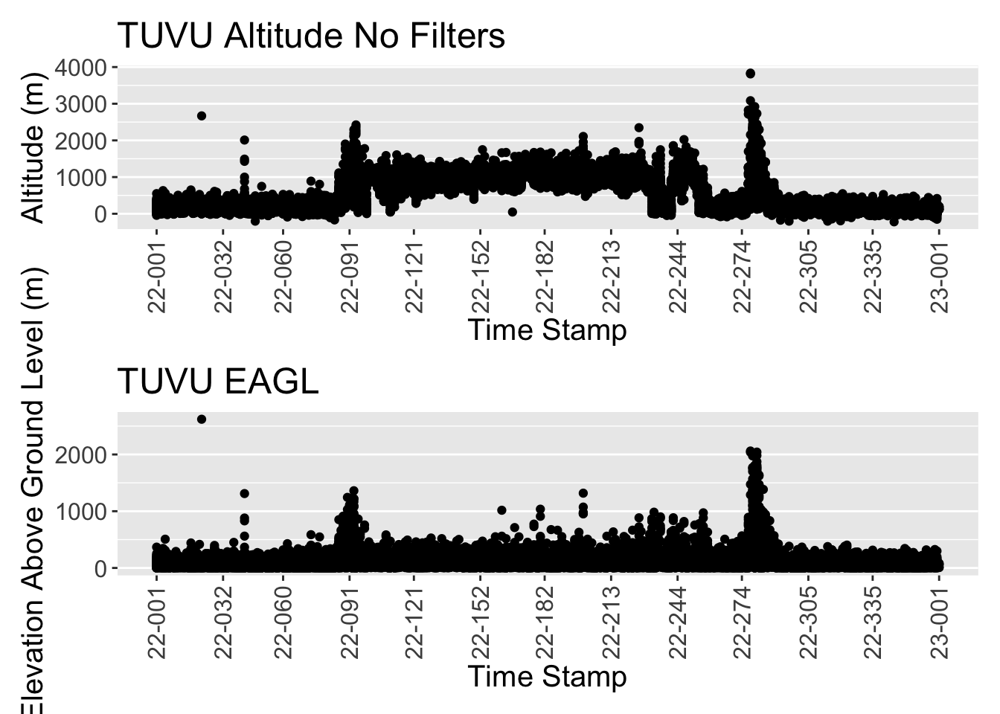</p>
</div>
</div>


</section>
</section>

</main> <!-- /main -->
<script id="quarto-html-after-body" type="application/javascript">
window.document.addEventListener("DOMContentLoaded", function (event) {
  const toggleBodyColorMode = (bsSheetEl) => {
    const mode = bsSheetEl.getAttribute("data-mode");
    const bodyEl = window.document.querySelector("body");
    if (mode === "dark") {
      bodyEl.classList.add("quarto-dark");
      bodyEl.classList.remove("quarto-light");
    } else {
      bodyEl.classList.add("quarto-light");
      bodyEl.classList.remove("quarto-dark");
    }
  }
  const toggleBodyColorPrimary = () => {
    const bsSheetEl = window.document.querySelector("link#quarto-bootstrap");
    if (bsSheetEl) {
      toggleBodyColorMode(bsSheetEl);
    }
  }
  toggleBodyColorPrimary();  
  const icon = "";
  const anchorJS = new window.AnchorJS();
  anchorJS.options = {
    placement: 'right',
    icon: icon
  };
  anchorJS.add('.anchored');
  const clipboard = new window.ClipboardJS('.code-copy-button', {
    target: function(trigger) {
      return trigger.previousElementSibling;
    }
  });
  clipboard.on('success', function(e) {
    // button target
    const button = e.trigger;
    // don't keep focus
    button.blur();
    // flash "checked"
    button.classList.add('code-copy-button-checked');
    var currentTitle = button.getAttribute("title");
    button.setAttribute("title", "Copied!");
    let tooltip;
    if (window.bootstrap) {
      button.setAttribute("data-bs-toggle", "tooltip");
      button.setAttribute("data-bs-placement", "left");
      button.setAttribute("data-bs-title", "Copied!");
      tooltip = new bootstrap.Tooltip(button, 
        { trigger: "manual", 
          customClass: "code-copy-button-tooltip",
          offset: [0, -8]});
      tooltip.show();    
    }
    setTimeout(function() {
      if (tooltip) {
        tooltip.hide();
        button.removeAttribute("data-bs-title");
        button.removeAttribute("data-bs-toggle");
        button.removeAttribute("data-bs-placement");
      }
      button.setAttribute("title", currentTitle);
      button.classList.remove('code-copy-button-checked');
    }, 1000);
    // clear code selection
    e.clearSelection();
  });
  function tippyHover(el, contentFn) {
    const config = {
      allowHTML: true,
      content: contentFn,
      maxWidth: 500,
      delay: 100,
      arrow: false,
      appendTo: function(el) {
          return el.parentElement;
      },
      interactive: true,
      interactiveBorder: 10,
      theme: 'quarto',
      placement: 'bottom-start'
    };
    window.tippy(el, config); 
  }
  const noterefs = window.document.querySelectorAll('a[role="doc-noteref"]');
  for (var i=0; i<noterefs.length; i++) {
    const ref = noterefs[i];
    tippyHover(ref, function() {
      // use id or data attribute instead here
      let href = ref.getAttribute('data-footnote-href') || ref.getAttribute('href');
      try { href = new URL(href).hash; } catch {}
      const id = href.replace(/^#\/?/, "");
      const note = window.document.getElementById(id);
      return note.innerHTML;
    });
  }
  const findCites = (el) => {
    const parentEl = el.parentElement;
    if (parentEl) {
      const cites = parentEl.dataset.cites;
      if (cites) {
        return {
          el,
          cites: cites.split(' ')
        };
      } else {
        return findCites(el.parentElement)
      }
    } else {
      return undefined;
    }
  };
  var bibliorefs = window.document.querySelectorAll('a[role="doc-biblioref"]');
  for (var i=0; i<bibliorefs.length; i++) {
    const ref = bibliorefs[i];
    const citeInfo = findCites(ref);
    if (citeInfo) {
      tippyHover(citeInfo.el, function() {
        var popup = window.document.createElement('div');
        citeInfo.cites.forEach(function(cite) {
          var citeDiv = window.document.createElement('div');
          citeDiv.classList.add('hanging-indent');
          citeDiv.classList.add('csl-entry');
          var biblioDiv = window.document.getElementById('ref-' + cite);
          if (biblioDiv) {
            citeDiv.innerHTML = biblioDiv.innerHTML;
          }
          popup.appendChild(citeDiv);
        });
        return popup.innerHTML;
      });
    }
  }
});
</script>
</div> <!-- /content -->


</body></html>